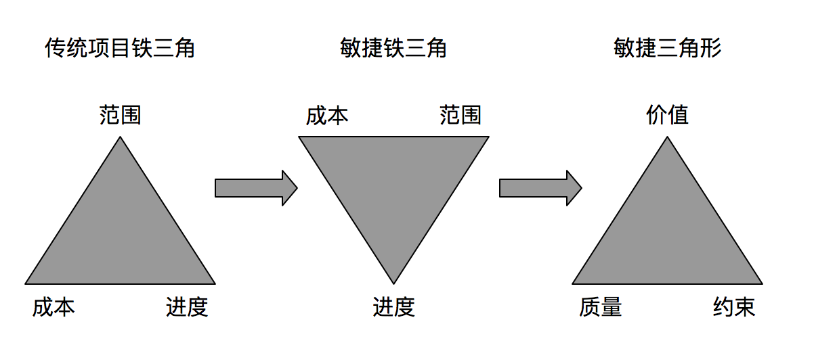

一、敏捷革命
1.当我们将试验成本减少到足够低时，整个产品开发的经济学就会发生改变——从以预测为基础的流程（定义、设计，然后建造）转变为一个以适应为基础的流程（构想、探索，然后适应）
2.当生产不同产品的成本突然降低，而把这些不同产品集成到一个产品的成本又很低时，那么这个很大的产品可以说不是生产出来的，而是进化出来的
3.罗伯特·库珀：“各地的公司，无论蔬菜销售商还是坚果销售商，无论是开罐器制造商还是汽车制造商，都参与了新产品研发战争 ，而前沿部队就是产品开发团队。在这个新产品战场上，闪电般的攻击能力——计划充分且出击迅速——越来越成为成功的关键因素。而机动性或者速度则可以保证闪电攻击能够抓住机会或者捕捉到敌人”
4.最终客户价值是在销售时交付，不是在计划时交付
5.任何以敏捷方法为幌子进行特殊开发的人，都是彻头彻尾的骗子
A.敏捷商业目标
1.一个良好的探索流程（如敏捷项目管理）需要实现5个关键的商业目标：
- 1）持续创新，满足当前客户的需求
- 致力于向客户提供价值，以及创造满足当今客户需求的产品，是这个持续创新流程的推动力
- 创新思想并不会在模式化的、独裁的环境中产生，而会在基于自我组织和自我约束为原则的不断适应氛围中产生
- 2）产品适应性，满足未来客户的需要
- 要想让产品持久地占有市场，唯有努力提高产品的适应能力
- 在敏捷项目中，卓越技术通过两方面判定：一是现在提供客户价值的能力；二是创造强适应性产品的能力
- 敏捷技术的做法将重点放在减少技术债务（提高适应能力），将其作为开发流程的组成部分
- 在敏捷项目中，开发人员致力于卓越技术，而项目经理则提供支持
- 3）缩短交付进度，满足市场，提高投资回报率（return on investment，ROI）
- 缩短交付周期、满足市场需求仍然是项目经理和主管要优先考虑的企业目标
- 敏捷项目管理的迭代开发、基于功能的本质可以通过3种方式缩短交付周期：突出重点、简化流程和培养技能
- 4）人员和流程适应性，对产品和企业变化做出迅速反应
- 如果我们想要适应能力强的产品，就必须建立一支适应能力强的队伍——其成员都乐于变革
- 敏捷项目管理的指导原则和架构鼓励把学习和适应当做向客户提供价值的组成部分
- 5）可靠的结果，支持业务增长和赢利能力
- 探索项目不能产生已知的、完全预告规定的结果，但可以产生有价值的结果——一个满足客户目标和商业需求的可以交付的产品
- 良好的探索流程可以不断地提供创新
2.重复的流程是指按照同样的方式做同样的事情 ，并产生同样的结果；而可选是指无论在生产过程中遇到什么障碍，都能达到目标，它意味着为达到一个目标而不断改变
3.如果目标是提供符合已知的、不变的说明要求的产品，就用重复的流程。相反，如果目标是提供有特定限制的价值的产品，而变化和截止日期都是非常重要的因素，那么可靠流程更为适用
B.敏捷的定义
1.敏捷是制造并响应变化从而在动荡的商业环境中创造利润的能力
2.敏捷是平衡灵活性和稳定性的能力
3.制造变化可以扰乱竞争对手（及其整个市场系统），而对变化作出反应能防止竞争冲击。制造变化需要创新：开发新产品、建立新的销售渠道、缩短产品开发周期、为日益变小的细分市场定制个性化产品。此外，公司还必须能够迅速响应竞争对手和客户制造的可预见和不可预见的变化
4.复杂性理论告诉我们，创新（即创造一些我们不能完全预见的新东西、突发的结果）最容易出现在混乱和秩序、灵活性和稳定性之间的平衡点时
5.组织结构太严密会抑制创造性，太松散会导致效率低下
C.敏捷价值观
1.敏捷强调的是态度而不是流程，它是氛围而不是方法
2.那些卓越的公司创立的基础（核心价值和目的）往往是永恒不变，但其策略（商业）和做法（业务实践）是变化的
3.在业绩优良的团队中，领导管理原则，而原则管理团队
4.团队为何存在、要创造什么产品、为谁而创造以及如何共同工作，这些组成了敏捷项目管理的核心原则。如果想要创造优秀的产品，就需要有优秀的人才；如果想吸引并留住优秀的人才，就需要有优秀的原则
5.没有行动的宏伟原则纯属幻想，相反，缺乏指导原则的具体的实践通常都是不合理的应用
6.敏捷宣言
- 个体和交互胜过流程和工具
- 可以工作的软件胜过面面俱到的文档
- 客户合作胜过合同谈判
- 响应变化胜过遵循计划
- 虽然右项也具有价值，但我们认为左项更具有价值
7.相互依赖声明
- 通过持续为客户创造价值来提高投资回报
- 通过不断地与客户交互、共享所有权来交付可靠的结果
- 预测不确定性，并设法通过迭代、预防、适应来应对不确定性
- 个体价值是团队价值的源泉、创建能让个体卓越的环境，实现创造和创新
- 通过激发成员的使命感和责任感来提高团队绩效
- 通过使用根据具体情况而定的策略、流程和做法来提高效率和可靠性
8.平等主义精英的核心价值观强烈影响着敏捷运动。当然，这个核心价值观并不是唯一能制造产品的价值观，但其定义了大多数敏捷主义者对自己的认识
9.敏捷管理者应该具有的信心价值观：
- 交付价值胜过满足约束（价值胜过约束）
- 领导团队胜过管理任务（团队胜过任务）
- 适应变化胜过遵循计划（适应胜过遵循）
10.传统的项目管理者注重按计划行事，尽量做到和计划没有出入；而敏捷项目管理者则关注如何 成功地去适应那些不可避免的变化
11.技术质量：价值持续产生的决定性因素
D.敏捷绩效评估
1.敏捷项目评估的3个目标：
- 价值目标——提供可交付的产品
- 质量目标——提供可靠的、适应性强的可交付产品
- 约束目标——在可接受的约束内，实现价值和质量目标
2.敏捷三角形的演变

E.敏捷项目管理架构
1.以生产为导向的项目管理流程和做法强调完整的早期计划和要求说明，并且要求以后将尽量不会改动；而基于探索的流程虽然也强调早期计划（仅是名义上的），但它更强调足够好的要求和可实验可改进的设计方案，而且随后会通过不断学习，做出重大改动
2.敏捷项目管理交付方法包括5个阶段：构想、推测、探索、适应和结束
3.构想阶段产生一个清晰明白的业务或者产品构想，为后面的阶段划出边界；在推测阶段，团队推测产品的规格，制定一个发布计划，随着项目的不断进行，技术要求和客户要求会随着新知识的获得不断演变；然后是探索阶段，它和迭代平等作业，其中要完成最初的功能和需求设计；在适应阶段，这些试验的结果需要经过技术、客户和企业的个案审查，以便在下一次迭代过程中继续做出调整
F.敏捷项目成功率
1.至少，敏捷方法有潜力极大地提高竞争优势。它能很大程度上提高生产力和质量缩短时间，而这些最终会改变整个商业模式
2.敏捷项目管理不限于一小套做法和技巧，它定义了如下的策略能力：提供可交付的产品、创造和适应变化 、在灵活性和结构之间保持平衡、挖掘开发团队的创造力和创新能力以及引导组织度过动荡和不确定的时期
二、价值胜过约束
1.尽管诸如成本和进度这样的约束很重要，但为客户创造价值也很重要。通常人们总是关注容易测量的因素，而忽视了真正至关重要却难以量化的特征
2.如果团队关注结果——哪怕仅给予最小的关注，他们也更有可能交付真正商业价值
3.结果包括产品构想、商业目标和性能（高级产品功能），而没有具体需求
4.质量目标定义了交付可靠的、可适应的（可工作的并易于改进）产品，这些都是很关键的价值特质
5.项目领导可以通过以下几种方式来关注产品价值：价值确定（与客户一起）、价值优先级排序（订单管理）、价值创造（迭代开发）
- 价值确定通常是业务经理和产品经理的职责，但项目领导也经常参与成本/效益分析和价值判断（特别是在产品公司）
- 价值优先级排序也大多是产品经理的工作，但项目领导者也要参与，特别是面对客户或不知道技术需求的情况下
- 价值创造是在项目组内指的是与客户合作、把客户需求分组、减少技术债务（保证质量和价值交付）等活动
A.持续创造客户价值
1.通过持续创造客户价值来提高投资回报——相互依赖宣言
2.价值是指企业或组织的产出结果，往往与财务收益有关
3.持续是指价值能经得起时间的考验——无论是现在还是将来
4.软件设计行业，适时交付软件第一个版本固然重要，但交付高质量并能适应未来需求的产品更重要
5.客户和产品经理推动着敏捷开发
6.客户阐明产品应该具备的性能、带来的价值和实现量化该价值的商业目标
7.符合当前客户需求，但不容易适应未来需要的产品，注定其生命周期是很短暂的
8.成功的秘笈很简单——今天交付，明天适应
9.客户是用创造的产品来产生商业价值的个人或群体
10.“利益相关方”表示与项目相关的、协助定义产品商业价值和其他约束的个人
11.如果希望交付的产品具有重大的客户价值，就必须在客户和开发人员之间建立伙伴关系，一种双方都承担责任和义务的关系
12.敏捷团队不断地寻求客户参与，并总向客户提问“我们所做的对您实现企业目标有帮助吗？”
13.提供客户价值涉及3个特别重要的话题：一是将重点放在创新和适应性而不是效率和优化，二是专注于执行，三是精益思维
14.“我们生活在一个由创造力、创新和想象力推动世界发展的时代”——汤姆·吴杰克和桑德拉·马斯喀特
15.创造新产品和新服务不同于对现有产品作微小改进
- 前者必须将重点放在创新和适应性，而后者通常注重效率和优化
- 效率提供我们能想见到的产品和服务，而创新提供的是我们想象不到的产品
- 效率和优化是生产型项目的有利助推器，而创新和创造力却是探索型项目的助推器
- 生产型思想倾向会限制对可行性方案的想象，而探索型思想倾向帮助探索看似不可能的事情
- 优化意味着已经知道如何做某事，只是现在需要改进它；创新意味着不知道如何做，所以探求知识就显得极为重要
16.如果项目经理将精力集中于交付活动，他们为项目增加了价值；而如果集中于计划和控制，就可能增加管理费用
17.传统项目管理方法由3个信息交流流程组成：计划、控制和执行
18.传统计划存在一些问题：
- 计划的动机通常来自项目之外，即制定计划的目的是为了满足法律法规或者管理要求
- 制定计划的动机往往与控制欲有关，而不是与实际工作的实施需要有关
- 计划和控制成为焦点，而执行被看作是最不重要的
19.在敏捷项目管理中，项目经理的首要任务是促进产品构想的构思，并指导团队去实现该构想，而不是制定计划和进度表、控制进度，保证“计划”得以实行
20.敏捷项目管理不是反计划的模型。计划（和控制）是敏捷项目管理的一个组成部分，只不过它不是重点
21.敏捷运动的许多想法都源于精益生产。精益生产的一个基本原则是系统地消除浪费，即减少不向客户提供价值的活动
22.一个简化项目（做较少的事、做正确的事、消除瓶颈）的方法是区分交付活动和合规活动，以及对每种活动分别采用相应的策略
23.过多的结构不仅会扼杀主动性和创新，而且消耗了大量的时间。根本问题不在于这些方案有无价值，而在于他们从根本上将流程凌驾于个人知识和能力之上
24.交付的相关活动与合规活动对项目经理有特殊的重大意义：
- 项目经理需要分析项目活动，以保证用在交付活动上的时间最多
- 项目经理必须分析他们自己的活动，以确定他们是在从事交付活动还是合规活动
B.迭代、基于功能的交付
1.如果想创新，就必须迭代
2.敏捷项目可以快速并递增地在整个项目期内交付价值。采用迭代、基于功能的交付方式，能在早期捕获价值，而且通常可以极大地提高项目的投资回报率
3.完成一个需求文件只是证实这个团队成功地收集到了一套需求；而完成或演示一套可以工作的产品功能证实开发团队实际已经向客户交付了有形的东西
4.敏捷的迭代组成部分可以用4个关键词表示：迭代、基于功能、时间框和增量
- 迭代开发是指要建造产品的部分版本，然后通过连续的短期开发以及评审和修改，扩展该版本
- 基于功能的交付是指设计团队建造最终产品的功能，或者至少是与最终产品最接近的代表物（如模拟、模型），尤其是对于工业产品
- 迭代要求在一定的时间期限内——时间框（对于软件是1-4个星期）——产生一个结果，该时间框强制迭代的结束，强迫人们在准备充分之前，就制造出部分实体
- 增量开发是指建造的产品，在经过一次或多次迭代后都可以及时的被调用
5.功能交付方法：客户决定进度和功能的优先次序，而产品工程师确定提供这些功能需要的任务，以及完成这该任务要花费的时间和成本
6.对于需求可能会随时间推移而演变的项目和产品，让客户在开发过程期间评审结果，使其尽可能接近实际产品，就显得尤为关键
7.迭代开发同时也是自我纠正的过程。自我纠正最重要的方面是客户在产品演变过程中提供的反馈信息
8.随着演变融入后面的迭代开发，客户对产品的信心会增加，或者相反，开始清楚地认识到该产品无法工作，应该趁早抛弃
9.促进探索很关键，但知道何时停止也很关键
10.“在我实行迭代开发的前几年，认为时间框实际上是关于时间的，但后来我逐渐意识 到，时间框的作用实际上是强制做出困难的决定”
C.卓越技术
1.敏捷开发人员致力于卓越技术，不是因为美学，而是因为致力于卓越技术可以交付客户价值。项目领导必须是卓越技术的拥护者；他们在密切注视其他项目目标的同时，必须支持并提倡卓越技术
2.高品质能确保公司在未来交付价值。许多软件都是苦于技术债务和低质量的做法带来的问题的积累
3.敏捷开发人员认为迭代、新兴设计和频繁反馈可以产生更出众的设计
4.任何公司都不可能制造出完美的产品，但制造提供客户价值并保持技术完整的产品是商业成功的关键，也是令技术团队满意的关键
5.项目经理需要与团队一起，讨论和决定开发的技术方法，而且在决定技术问题时，让团队不要忘记企业目标。项目经理可以不做决定，但他们应该具备足够的知识，去引导团队成员相互交流，以确保团队充分地消化吸收项目资料，并及时做出正确的技术决定
6.项目经理必须支持卓越技术，因为它是适应能力和低成本迭代的关键，而这两者是产品长期成功的推动力。项目经理不必是技术权威人士，但必须具备足够的知识，才能与这样的技术权威交流
D.简化
1.“如果想让船走得更快，那么割断锚绳比加大马力要来得容易”——卢克·霍
2.如果想快速而又敏捷，就要保持事情简单。速度不是简化的结果，但简化能提高速度
3.“简化非常关键，它是最大程度地减少不必要工作的艺术”——敏捷宣言
4.采用去掉详细的基于任务的结构和合规工作来简化流程，就强迫人们思考和交流
5.简单原则是复杂性理论“群体智能”的一个方面，其思想是一套简单正确的规划，应用到一个高度相互作用的群体中，然后产生诸如创新和创造力之类的复杂行为
6.再生做法：一个系统在一起正常运转的小最单位，它并不规定一个转化需要做的每件事，而是确定那些具有非常高的价值、适用于几乎每个项目的做法。采用这些做法，项目团队将“生成”其他必要的辅助做法，作为他们裁减和改变该套做法、适应具体需要的一部分
7.在决定流程、方法、做法、文档以及产品开发的其他方面时，简化理念告诫我们应该把方向引向刚刚足够、精简和实施的“比刚刚够少一点”
- 简化需要平衡速度需求和灵活性，同时保持足够的稳定性，避免疏忽错误
- 刚刚足够并不意味着不足，也不意味着“无文档”或者“无流程”
8.在产品开发中，缺乏速度会导致竞争劣势，而仓促会导致错误。平衡，是敏捷的关键之一
9.如果领导者能够巧妙地将复杂问题简单化、能够制定刚刚足够的流程、能够找到快速和仓促之间的分界线，那么他无疑有更高的成功机率
10.如果不能区分交付和合规，就会导致合规工作——为管理机构、律师或者高层管理编制文件——不断增加，而将产品降到次要位置
11.“系统主义”：盲目地相信系统，认为可以通过系统达到任何必要的目标
12.约翰·格尔反对系统主义：
- “根本问题不在于某个特定系统，而在于类似的系统”
- “系统往往不断扩张，填补已知世界”
- “系统往往反对他们自身的正确功能”
13.一些合规活动是必要的。每个组织、每个项目团队都有一定的合规活动。例如医疗行业医药许可

三、团队胜过任务
1.敏捷领导者领导团队，非敏捷领导者管理任务
2.敏捷项目管理强调团队管理，提倡建立自我组织团队和发展服务型领导方式。这比管理任务更加困难，但最终的结果会更令人满意。在敏捷项目中，团队成员关注任务，项目领导关注团队
A.领导团队
1.“在战斗中，你管不了人，你只能管事情……并领导别人”
2.项目管理和领导的区别：管理处理复杂性，领导就会变化
3.想建立适应能力强的、自我组织的项目团队，领导者应该引导而不是控制，在某些情况下，他们影响、轻推、促进、教授、建议、协助、催促、劝告以及指导
4.项目领导应该即是管理者，又是领导者，随着项目的探索系数增高，后者的重要性将迅速上升
5.领导者之所以成为领导者，不是因为他们所做的事情 ，而是因为他们扮演的角色
6.领导者在很大程度上依靠的是影响力而非权力，影响力来自于人们的尊敬而不是敬畏。取决于领导者的性格。领导者虽然得到组织的授权，但他们真正的权力不是自上而下委派的，而是自下而上赢得的
7.领导者鼓励变化：提出未来可能性的想象（通常细节很少）；通过大量人员交流，发现能够帮助将产品构想变为现实的新信息；以及激发目的感，激励人们致力于一些超出常规的事情
8.管理幻想（霍奇森和怀特）：
- 为什么认为你处于受控状态？
- 为什么认为你能够预测未来及其结果和效果？
- 为什么认为你曾成功过的方法就能够再次行得通？
- 为什么认为任何重要的事情都是可以评估的？
- 为什么认为诸如领导、管理和变化这些词对任何人来说，意思都一样？
- 为什么认为降低不确定性必然会增加确定性？
9.敏捷项目经理帮助他们的团队在混沌的边缘保持平衡——一些而不是过多的组织结构、适度而不过多的文件、一些事先准备但不过多的体系结构工作，找到这些平衡点是敏捷领导才能的艺术
10.领导-协作的管理风格创建了这样的社会体系结构：一个可以让组织和团队面对环境多变性的结构。这种社会体系融合了这些概念：平等主义、才干、激情、自律和自我组织
11.“指挥官知道目标，领导者把握方向；指挥官发号施令，领导者施加影响；控制者提出要求，协作者加以促进；控制者事事管理，协作者不断鼓励。支持领导-协作模式的经理非常清楚他们的主要角色是设定方向、提供指导以及促进人们与团队之间的联系”
12.“在混沌时代，成功较少取决于生搬硬套而更多的是依赖于理智；较少取决于少数人的权力而更多的是依赖于多数人的判断；较少取决于强制而更多的是依赖于激励；较少取决于外部控制而更多的是依赖于内部纪律”
13.“敏捷”是社会技术运动，它有两个推动力：一个是愿望——创造一种特定的工作环境；另一个是信念——适应性强的环境是向客户提供创新产品目标的关键
B.建立自我组织（自律）团队
1.自我组织团队是敏捷项目管理的核心，他们结合了自由和责任、灵活性和结构。面对矛盾和模糊性，团队的目标是始终如一地在项目范围内和产品构想基础上进行交付（包括适应性）
2.在自我组织的团队中，个人负责管理自己的工作量，根据需要和最适合原则轮班工作，并对团队效率负责
3.对于如何“交付结果”，团队成员有自己保有较大的灵活性，但他们对结果负责，并在制定的灵活框架内工作
4.“自我组织的团队的特征不是缺乏领导，而是一种领导风格”
5.创建自我组织的团队需要：
- 1）找到适当的人员
- 项目领导者有权否决其他经理单方面想指派到该项目的任何团队成员
- 任何流程都不能克服优秀工程师、产品经理、客户和主管缺乏的问题
- 高效率的项目经理将重点依次放在人员、产品和流程。没有适当的人员，将不能建造任何任何产品；不将精力放在产品上，其他无关系的活动就会渗入；没有一个最低限度的流程框架，就会出现效率低下乃至混乱
- 2）清楚表达产品构想、界限和团队角色
- 3）鼓励协作
- 4）坚持负责
- 通过激发成员的使命感和责任感来提高团队绩效——相互依赖声明
- 团队成员相互承诺 ，团队对客户承诺，项目经理承诺为团队提供特殊资源，他们就都同意了承担责任
- 每个团队成员都有责任提高团队协作，每个团队成员和项目领导相互履行承诺 是义不容辞的责任
- 5）培养自律
- 自律是自由和授权的前提。如果个人和团队想要更多的自主权，他们就必须有更多的自律
- 自律的人可以：对结果负责；用严谨的思维对抗现实；参与激烈的交流和争辩；愿意在自我组织框架内工作；尊重同事
- 自律也是建立在能力、坚持和愿意承担结果的责任之上，才干不仅是技能和能力，它是态度和经验
- “关键是首先要找到自律的人，他们进行严谨思维并会在一致的系统框架内采取守纪律的行动”
- 6）引导而不是控制
6.敏捷不会因为有良好的意图就自动发展。敏捷团队的成长和成熟需要时间，也需要致力于建立关系和鼓励协作
C.鼓励协作
1.自我组织团队的能力在于协作，即两个或更多的人相互交流和合作以共同产生一个结果
2.协作的结果可以分为：有形的可交付物、决定和共享知识
3.如果没有有着正确技能和行为规范的合适人选，任何的流程和工具都不会产生任何结果
4.协作结果的质量优劣取决于信任与尊重的程度、信息流动的自由度、辩论以及积极的参与，同时也受到参与式决策流程的约束
5.健康团队关系的核心是信任和尊重，自信和自负仅有一线之隔
6.如果协作太少、信息交流太少，团队就会分歧严重，整合就会变成一个恶梦（因此需要经常整合）；而如果协作太多、信息交流太多，团队就会陷入会议和信息超载
7.参与式决策：
- 决策是协作的心脏和灵魂，领导也是良好决策的关键
- 高效率的领导“吸收”模糊性、负责做决定并让团队继续其工作。知道何时和如何应对模糊是高效率领导者的一个标志
- 重新构思意味着将多种想法合并起来，创造一种比任何一个单独想法更好的东西。它不是放弃而是增加
- 创新是通过相互交流、逐步扩展想法，然后融合这些想法后突然出现的
- “妥协造成两极分化、重新构思导致联合”
- 自我组织的团队偶尔需要经理做出单方面的决定，但他们的主要风格是包容，鼓励团队成员广泛地参与决策以便做出最好的决策
8.共享空间：
- 创新并不会因为一些确定性的流程而得到保证，创新是安全性流程的结果，在这个流程中，具有创造性想法的个人相互交流，引发了某些新颖的、与众不同的东西的产生。演示、原型、模拟和模型是相互交流的催化剂，他们组成了“共享空间”，其中开发人员、市场人员、客户和经理可以做有重大意义的交流
- 共享空间有两个要求：直观化和公共性
- 直观化：当工程师与客户讨论原型、致力于功能而不是文档时，相互交流的质量就会得到很大提高
- 公共性：意味着原型需要得到开发工作的所有利益相关方的理解
9.客户合作：
- 客户或者产品团队应该是任何敏捷开发工作不可或缺的一部分
- “敏捷”经常指出客户和产品团队的不足，并且需要和产品团队定位自已的角色
D.不再需要自我组织团队
1.如果让自我组织继续发挥价值，那么有几个问题要处理：
- 需要摆脱掉一个观点——敏捷项目无领导或者谁是领导取决于不同的情境
- 授权型自我组织团队的支持者已经过时了——适宜的领导保留适当的决策权与授权给团队相结合的方式
四、适应胜过遵循
1.“传统的项目管理者注重按计划行事，尽量做到和计划没有出入；而敏捷项目领导者关注如何成功地去适应不可避免出现的变化”
2.以客户价值和质量为目标，计划就是实现这些目标的方式，而不是目标本身
3.传统经理不断修正实际结果来符合基线，PMBOK称为纠偏行为，用来引导团队回归基线；适用行为用来描述应该采取 什么行动方针（其中一个行为可能被修正以符合计划要求）
4.《敏捷宣言》和《相互依赖声明》中包含了5个与适应性有关的原则：
- 《声明》：预测不确定性，并设法通过迭代、预防 、适应来应对不确定性
- 《声明》：通过使用根据具体情况而定的策略、流程和实践来提高效率和可靠性
- 《宣言》：响应变化胜过遵循计划
- 《宣言》：即使在产品开发后期，也乐于接受变化的需求，敏捷流程充分利用变化以增加客户竞争优势
- 《宣言》：团队定期反省如何做到更有效，然后相应调整团队行为
5.上述原则可以概括为：
- 预测变化（不确定的），然后做相应调整，而不是遵循过期计划
- 根据需要调整流程和做法
6.团队必须适应，但是不能脱离最终的项目目标，无论是适应性流程还是预测性流程
7.可以用4个问题来评估流程：
- 在发布产品的同时，是否交付了价值？
- 是否实现了创造可靠的、具有适应性的产品质量目标？
- 项目进程是否满足可接受的要素范围？
- 团队是否在有效地适应管理、客户和技术等方面的变化？
8.适应可以看做是对变化做出的沉思熟虑的回应
9.“变化”：变得不同，使事物的性质、形态变得与原来不同
10.“适应”：不断作相应的改变以满足一定用途或形势
A.适应学
1.如果认为世界是静止的，则生产型管理做法将占主导地位；但如果认为世界是动态的，则探索型的管理做法将涌现出来。通常会出现静态和动态的混合。
2.复杂适应系统，无论是生物学还是经济学，都是以下独立行动者的集合：
- 通过相互影响创造生态系统的行动者
- 其相互交流定义为信息交流的行动者
- 其个体行为基于一些内部规划系统的行动者
- 按照非线性方式自我组织、产生安全性结果的行动者
- 显示出秩序和混乱两个特征的行动者
- 随时间演变的行动者
3.个体行动者的行动由一套内部规则推动：敏捷项目管理的核心思想和原则
4.一套简单的规则会产生复杂的行为和结果，而另一方面，复杂的规则通常会变成官僚作风，这些规则的表达方式对复杂系统的动作有非常大的影响
5.安全性是复杂适应系统的一个特性，复杂适应系统通过各部分（自我组织的行动者的行为）的相互作用，会创造出整个（系统行为）系统的更大特征。这个安全性系统行为是不能完全用行动者的标准行为来解释的，安全性结果不能以正常的因果关系来预测，但可以通过以前产生类似结果的模式来预见他们的发生
6.适应性开发流程与优化流程具有不同的特征。优化反映的是说明性的“计划-设计-建造”周期，而适应反映的是有机的、进化的“构想-探索-适应”周期。适应流程不是以一个解决方案开始，而是以多个可能的解决方案（试验）开始，然后，应用一系列的适合性测试（实际产品功能或者模拟，取决于验收试验），根据反馈信息进行改变，从而探索并选择最好的解决方案
7.如果不确定性低，则适应方法的风险是高成本，而如果不确定性高，则优化方法的风险在于太早的确定某个解决方案会抑制创新
B.探索
1.拥有响应变化的能力固然很好，但是如果能给竞争对手创造变化则更佳
2.创造变化，就是向对手展开竞争攻势，响应竞争对手的变化，就是在防守
3.“适应的速率要超过市场变化的速率”
4.敏捷领导者需要鼓励和激发团队成员通过这些高度变化的环境所造成的困难。鼓励包括保持自我镇静、鼓励试验 、借鉴成功和错误经验，以及帮助团队成员理解这种鼓励的所有部分
5.伟大的探索者清楚表述出可以激发人们灵感的目标——让人们激动、自我激励的目标，这些目标或者构想作为一致的工作重点，刺激人们并在团队中建立团队精神，激发灵感的目标必须是充满活力的、令人信服的、清楚的、可行的但又刚好的，它融入团队的激情中
6.鼓励型领导者知道好目标和坏目标之间的区别。鼓励型领导知道设定一个产品的构想需要团队的努力，需要基于分析、理解和现实的风险评估，同时还要有一点冒险精神
7.创新产品开发团队是被引导的而不是被管理的。他们容许他们的领导是有灵感的，将领导者的鼓励变成自我意识 的一部分。优秀的新产品、现有产品的显著改进和创新的新业务方案都是由激情和灵感推动的
8.领导者清楚团队目标。团队成员了解这些目标并以此激励自己。内在的激励可以激发探索。如果没有探索和失败，如果不探索多个方向并最终找到那个似乎有前途的方向，我们就不可能获得新的、更好的和与众不同的东西
C.响应变化
1.“预测变化 （不确定性），然后做相应调整，而不是遵循过期计划”
2.上述宣言可进一步归纳为：
- 构想—探索与计划—执行
- 适应与预见
3.每个项目都有已知的未知的条件、有确定因素和不确定因素，因此，每个项目都必须在计划和变化之间找到平衡
4.影响项目管理类型的另一个因素是迭代的成本，即试验成本
D.产品、流程和人员
1.适应性有3个组成部分：产品、流程和人员
2.许多软件组织实施敏捷的障碍是他们没有处理遗留代码中的技术债务
E.障碍还是机会
1.伊斯雷尔·干特“新玩具”综合症：“把重点放在新的开发上而忽视遗留代码”
2.经常集成好处非常大，它可以减少许多以前遗留的问题，迟早发现那些直到发布期快结束的时候才发现的问题
3.大多数情况下，人们感觉适应变化有障碍（成本太贵）是因为做事效率低下——没能抓住机会简化流程并提高组织的适应能力
4.敏捷开发需要短期迭代：做短期迭代需要找到快速、低成本的做重复事情的办法；快速、低成本的做事情使得团队采用以前从没有想到的方式去适应变化
F.可靠，但不重复
1.重复意味着按照同样的方式做同样的事情 ，并取得同样的结果；而可靠意味着无论在前进道路中遇到什么障碍，都能达到目标，也意味着为达到一个目标而不断改变
2.可重复流程通过评估和不断的流程纠正，减少可变性
3.可靠流程将重点放在输出，而非输入
4.可靠性是以结果为推动力，重复性是以输入为推动力
5.“重复流程最多只能交付事先规定的东西，而可靠、突发流程可以交付比开始时每个人的设想都更好的结果，只要你足够机敏且具备预见能力，突发流程就可以产生最初希望的东西”
6.敏捷项目中需要考虑的正确范围不是限定的要求，而是清晰、明白的产品构想——一个可发布的产品
7.评估项目成功的方法可以简化成一个问题：“我们有可发布的产品吗？”，而不是制造出了在项目开始时就规定好的特定功能的产品
8.尽管敏捷项目管理是可靠的，但它不是一贯正确的，它也不能消除不确定性的反复无常和在探索中遇到的出乎意料的事情
G.反思和回顾
1.适应变化需要具备这种理念和技巧
2.如果希望有较强的适应性，就必须愿意认真严格地评估个人和团队的绩效。有效的团队在回顾时会涉及4个领域：产品、流程、团队、项目
3.在每次迭代结束时和项目末期，对这些领域进行回顾和反馈，然后适应，从而提高绩效
H.从原则到做法
1.“根据需要调整流程和做法”
2.原则和做法是向导，他们帮着确定和加强人们的行为
3.在敏捷项目中，既要有预见性也要有适应性的流程和做法。根据已知信息发布计划来预见未来，反思根据随后 在项目中发现的信息来适应代码
五、敏捷项目管理模式
A.敏捷企业架构
1.投资组合治理层提供一些常见的检查点：项目管理层对各种项目的管理提供指导。项目管理层和迭代管理层不同，其差异可以洞察运行项目、制定发布计划和日常短期迭代管理的不同。区分迭代管理层和技术做法层，有助于把核心技术做活融合到几个项目或者迭代管理方法中去

2.投资组合治理：主管们都想知道项目的价值（及投资回报率）和获取该价值的确定性和不确定性
3.项目管理层：管理发布，与核心小组的外围利益相关者打交道
4.迭代管理层：关注每个短期迭代的计划、执行和团队领导
5.技术实践层：包括从持续集成到结对编程，从测试开始到重构等做法
B.敏捷交付架构
1.流程也许不如人那么重要，但它绝非不重要
2.如果企业目标是重复性的制造，那么常规性流程是完全合理的；而如果目标是可靠的创新，则流程架构必须是有组织的、灵活的和容易适应的
3.敏捷交付架构需要：
- 支持企业目标
- 支持构想、探索、适应文化
- 支持自我组织、自律的团队
- 根据项目的不确定性程度，尽量提高可靠性和连贯性
- 保持灵活和易于适应
- 支持流程的透明化
- 合并知识
- 囊括支持各个阶段的做法
- 提供管理检查点
4.敏捷项目管理模式的结构：构想—推测—探索—适应—结束，重点在交付（执行）和适应

5.敏捷项目管理架构与传统项目阶段的区别：
- “构想”代替较传统的“开始”，指出构想的重要性
- 推测阶段代替计划阶段：“计划”已经与预测和相对确定性相关联，而“推测”表示未来是不确定的
- 敏捷项目管理模式用探索替代通常的设计、构建和测试阶段，探索是非线性的、并存的、非瀑布式的模式；敏捷项目管理模式强调执行以及探索性而非确定性。实施敏捷项目管理的团队密切关注构想、监控信息，从而适应当前情况，这就是适应阶段
- 敏捷项目管理模式以结束阶段收尾，这个阶段的主要目标是传递知识，当然它也是一个庆典
6.敏捷项目管理的5个阶段是：
- 1）构想：确定产品构想、项目目标和控制要素、项目社团以及团队如何共同工作
- 该构想包括什么、谁提供和如何提供
- 构想是项目早期 “成功的关键因素”
- 产品及项目范围构想
- 需要构想参与者都有谁：客户、产品经理、项目团队成员和利益相关方组成的社团
- 项目团队成员必须构想他们打算如何共同工作
- 2）推测：制定基于性能和/或功能的发布计划，确保交付构想的产品
- “根据不完全的事实或者信息猜测某事”
- 对于探索性的项目来说，计划是基于不完全的信息推测或猜测
- 包括：收集初始的、广泛的产品要求；将工作量定义为一个产品功能清单；制订一个迭代的、基于功能的交付计划；把风险降低策略纳入计划；估计项目成本，并生成其他必要的行政管理和财务信息
- 3）探索：在短期内计划和提供经测试的功能，不断致力于减少项目风险和不确定性
- 通过管理工作量和合作适当的技术方法和风险降低策略，按计划交付产品功能
- 建立协作的、自我组织的项目社团，这是每个人的责任但需要由项目经理和迭代领导者推动
- 管理团队与客户、产品经理和其他利益相关方的相互交流
- 4）适应：审核提交的结果、当前情况以及团队的绩效，必要时做出调整
- 控制和纠正是这个周期阶段常用的术语
- 计划制定了，结果监控了，纠正也完成了，这个流程意味着计划是正确的，而如果实际结果与计划不同，则表明计划是错误的
- 适应意味着修改或改变，而不是成功或失败
- 非常特别的流程并不能从错误中吸取教训，而吸取教训是敏捷项目管理的关键部分
- 在适应阶段，需要从客户、技术、人员和流程绩效，以及项目状况等方面对结果进行检查
- 思考实际的与修订后的项目前景，修改后的结果将反馈并应用到重新计划工作中，以开始新的迭代
- 自构想阶段以后，其循环通常是推测—探索—适应，每次迭代都不断地优化产品。但是对团队收集新信息来说，定期修正构想阶段也万分重要
- 5）结束：终止项目、交流主要的学习成果并庆祝
- 结束阶段（以及每次迭代末尾的小型结束）的主要目标是：学习并将学到的东西融入下一次迭代工作中，或者传递给下一个项目团队
7.敏捷项目管理的构想和探索周期

8.没有做法的原则只是个空壳，而没有原则的做法经常会被毫无判断地生搬硬套；没有简单原则 ，人们往往会过多地看重做法的形式和仪式。原则指导做法，做法用实际例子证明原则 ，两者是相辅相成的
9.“没有最好的做法，只有更适合具体情况的做法”
10.过分强调线性会导致停滞不前，而过分强调演变会导致无休止的、最终证明是盲目的变化
11.“一切工作都应该是循序渐进的，即使是架构开发。序列开发中前期架构出错通常意味着长期适应性较差，因为没有人能够经得起在项目晚期再改变架构”
12.一个500人的团队可能不如一个10人团队敏捷，但它可以比竞争对手的500从团队更敏捷。只要将重点集中在价值、交付、自我组织和自律，即使团队再大，面临的协调问题再复杂，它也能随时应对商业、技术和组织的变化
C.扩展的敏捷交付架构

六、构想阶段
1.“在人类行为领域，很难发现非常一致的事情 。因此，一旦一个团队被认为是功能有效的，人们便归功于它们对目标有明确的了解”——拉森和拉法斯
2.虽然要求和设计的细节可能是易变的和模糊的，但企业目标和产品构想必须是非常明确的

A.可发布的产品
1.产品的一个发布标准是功能或者故事的完成，既从开发人员的角度（编码、单元测试）完成，也从产品团队的角度（验收测试）完成
2.可发布的产品和可用到的产品构想框和项目数据表中的信息可以定义为：
- 1）可交付的产品；产品构想框；项目数据表——项目目标声明、企业目标、性能、性能价值
- 2）可靠的、适应性强的产品：项目数据表——质量目标
- 3）在可接受的约束内：项目数据表——均衡矩阵（范围、进度、成本）
B.构想做法
1.目的是明确地鉴定需要做什么以及如何做，需要回答以下几个问题：
- 1）客户的产品构想是什么？
- 2）该产品的主要性能是什么？
- 3）项目的商业目标是什么？
- 4）项目的质量目标是什么？
- 5）项目的约束是什么（范围、进度和成本）？
- 6）谁是项目社团的合适参与者？
- 7）团队将如何交付产品（方法）？
2.如果没有共同的构想，项目就会步履蹒跚。没有构想，启动就成为官僚作风和缺乏新意的形式
3.构想阶段应该举行一系列的协调会议，让开发和产品团队成员参与进来
4.在敏捷项目管理的构想和推测阶段，尤其重要的是要记住：
- 1）团队成员应该经常自问：“我们需要的刚好足够的流程和文档是什么?”
- 2）与团队交付“方式”有关的所有做法都需要随着项目的进行，不断做出裁剪和调整，以提高业绩
- 3）项目社团将会不断演变其团队做法
5.4类做法：
- 1）产品构想
- 产品构想框和电梯测试说明书
- 产品体系结构和指导原则
- 2）项目目标和约束
- 项目数据表
- 3）项目社团
- 找到合适的人选
- 确定参与者
- 客户团队-开发团队界面
- 4）方法
- 流程和做法的截取
C.产品构想
1.产品构想（产品构想框和电梯测试声明）激励团队成员将各自对产品的不同观点集中成简练的、直观的简短文本格式
2.创新（创造我们无法预测的突发结果）需要一个能够容纳探索和错误的演变流程
3.每个产品需要有一个营销主题、一个简明直观的图像和功能描述，其目的是吸引潜在客户对该产品作进一步的了解
4.提出15个或20个产品功能很容易 ，但要想确认哪3个或4个功能能够吸引其他人来购买该产品却很困难，这通常会引发关于真正客户身份的激烈讨论
5.在每个小组递交产品构想框后，要讨论如何将不同的重点功能缩减成每个人都同意的几个功能
6.“电梯测试说明书”，编写产品定位的简短陈述 ，用几个句子表明目标客户、主要好处和竞争优势
7.“电梯测试说明书”的格式：
- 对于（目标客户）；
- 谁（需要或有机会声明）；
- 这个（产品名称）是（产品类别 ）；
- 它（主要的优点、引人注目的购买原因）；
- 不同于（主要的竞争产品）；
- 我们的产品（主要差别）
8.产品构想框和电梯测试说明书强调项目的目的是制造产品，可以让团队的客户产品思想有据可循
9.最后需要花费几个小时讨论记录活动挂图纸上的产品构想，团队可以对一个1-2页的完整产品构想文档有更好的概括认识。这份文档可能包括任务说明、构想框图、目标客户及其各自的需要、电梯测试说明书、客户满意评估标准、主要技术和业务要求、关键产品限制（性能、操作的简便性、体积）、竞争分析，以及主要财务指标
10.交付进度越关键、项目越多变，团队对于最终需要的结果是否有较好的构想就显得越重要。如果没有这个构想，迭代开发项目就很可能变得摇摆不定，是因为每个人看到的都是细节而不是宏伟的蓝图
11.产品体系结构的目标是描述项目的内部沟通渠道，是一种促进探索和指导正在进行的产品开发的设计
12.一个早期的“骨架”产品体系结构不仅能指导技术工作，也能指导执行技术工作人员的组织工作。它旨在把较大的项目背景传达给开发团队，而不是局限于一个设计
13.敏捷开发中，体系结构是引导，而不是紧箍咒
14.在敏捷发展中，体系结构和设计不是一次性的活动，而是随着自身演变在每次迭代中都会出现的活动
15.如果在一次又一次的迭代中，主要的体系结构不断发生变化 ，很明显，可能是什么地方出问题了
16.虽然通常来说，敏捷做法鼓励变化和适应，但是某些变化有更大的影响，而需要认真地协作；如果技术体系结构不好，就会使得这个变化的协调工作非常困难。一旦部件之间的协调或者整合花费了过多的时间，机敏的项目团队就会认识到体系结构决策不恰当，而需要修正
17.功能分解结构（Feature Breakdown Structure,FBS）可以用来描述软件或硬件项目产品体系结构
18.在项目早期阶段人力组织和技术体系结构同时演变，这个模式有利于大型项目中各个项目功能团队与主要的产品部件保持一致
19.指导原则（Guiding Principles,GP），用来协助开发团队塑造产品，满足客户需求。通常不是可衡量的要求或者限制，而只是概念上的指导
20.早期的指导原则可以在以后的演变中成具体要求
21.每个原则应该用一两个句子描述，而且在任何情况下，一个项目的全部原则描述不得超过10个句子
D.项目目标和约束
1.产品构想勾勒的目标没有限制，但是作为一个项目来讲就需要有目标和限制
2.项目需要有明确的商业目标（不同于客户的产品构想）、质量目标和一套明确定义的性能，从而开始界定出可交付产品的范围
3.项目数据表（Project Data Sheet，PDS）是项目目标和约束的最少文档编制
4.项目数据表是用一页纸概括主要商业和质量目标、产品功能和项目管理信息。这是一个简单却有重要影响力的文档。它简洁的格式，对整个项目社区呼吁并且不断提醒他们哪些是项目的战略方面
5.根据不同的组织和项目类型，项目数据表包括：
- 顾客/客户：主要顾客或者客户一览表
- 项目经理：项目经理的姓名
- 产品经理：产品经理的名称（产品拥有者）
- 高级主管：负责决策项目计划和约束的人
- 项目目标声明（Project Objective Statement，POS）：明确而简短的声明（不超过25个字），其中包括重要范围、进度和成本信息
- 商业目标：做这个项目的总的金融和商业原因
- 权衡矩阵：确立项目范围、进度和成本的相对优先次序的表格
- 探索系数：衡量项目风险和不确定性的度量标准（1~10）
- 延误成本：项目延误所造成的每日、每周或者每月成本（进度被列为最优先次序时尤其有用）
- 功能：主要功能一览表
- 质量目标：一个可发布的产品的定量、定性质量目标
- 性能/质量属性：产品主要性能和质量属性清单
- 体系结构指导方针：修正设计决定的主要体系结构指导方针
- 问题/风险：对项目有负面影响的因素
6.权衡矩阵帮助开发团队、产品团队和各利益相关方管理项目期间的变化，它告知所有参与方变化的重要性，是团队决策的依据。这个矩阵显示出敏捷三角形（价值、质量、约束）所确定的3个约束（范围、进度、成本）的相对重要性。如果组织必须适应变化，那么他们需要知道哪方面最具有灵活性

7.当项目启动的时候，项目计划估计在价值、质量和约束三者之间的健康平衡非常重要。当这个平衡被打破的时候，权衡矩阵就开始发挥作用。——肯·科利尔
8.探索系数用来表示项目的不确定性和风险的指标。探索系数为10表示问题领域是以探索为主（高风险），而系数为1表示比较稳定的环境
9.阐明项目的探索系数有助于管理客户和主管的期望值
10.探索系数是从产品需求（目的）的易变性及其技术平台（手段）的新颖性（也就是不确定性）派生出来的
11.探索系数矩阵

12.如果没有认识到不同的问题领域，整齐划一的项目流程和做法也许还有理由；而一旦有了这样的认识，按具体的问题量身定制适合的流程和做法将会使项目团队取得成功
E.项目社团
1.产品开发同其他大多数工作一样，找到合适的人员是成功的关键因素。这里的“合适的”包含了两层意思：具备适当的技术能力（或者专业技术）；表现出适当的自律行为
2.找到合适的人员并不意味着要找到最具天赋的、经验最丰富的人，而是说要做这个工作最适合的人选
3.如果计划承担困难的、极其苛责的项目，就需要最优秀的人才；而如果承担的是要求不很高的项目，并且有高于平常人的人才，仍然可以做得很好
4.几乎每个人在某些方面上都有超出平均水平的潜力。帮助他们发现自己的潜力是经理的工作
5.两个因素决定了团队是否有“合适”的人员：能力和自律。合理的流程可以帮助适当的人员有效地在一起工作，但这并不能弥补人员配置不恰当的问题
6.合适的人员将重点放在交付上，而不合适的人员带来更多的合规工作
7.确定参与者
- 1）3类参与者：客户（可能包括最终用户、他们的经理、产品专员、产品经理和高级主管）、开发团队成员和利益相关方
- 2）如果产品团队成员忘记他们仅仅是代表真正的客户，而不是真的客户的话，就会发生大问题
- 3）利益相关方3个级别：
- 关键的：无论在实施之前或之后，这些参与者都可以阻止项目成功，换句话说，他们是特别有影响力的人
- 必需的：在实施之前或之后，这些参与者可以拖延项目成功，换句话说，要围绕他们工作
- 非必需的：这些参与者是感兴趣者，对项目没有直接影响，但是如果不将他们包括在社团内，他们可能变成关键或者重要的参与者
- 4）项目参与者可能包括：高级主管、项目领导者、产品经理、产品专员、迭代经理、总工程师（开发人员、架构师）、高层管理、产品团队、项目团队、开发团队、供应商、政府等
- 5）参与者的群体越复杂，项目领导者在管理期望值、做关键的项目决策和防止团队不受到太多方向的牵制等方面花费的时间就越多
8.产品团队——开发团队交互
- 1）产品团队负责“建造什么”，开发团队负责“如何建造它”
- 2）如果没有强有力的产品经理，就会出现最坏的情况——无法确定优先次序

- 3）组织内部IT项目失败或者表现不佳的其中一个关键原因是：错误地理解了项目经理和产品经理这两个角色的本质，产品经理必须来自IT部门外部
- 4）尽管角色界定很重要，实际上角色具有灵活性，应该根据担任该角色的人做出适当调整。强迫人们按照固定的角色描述不仅是不可能的，也是违背敏捷原则的
- 5）人员不仅比流程重要，也比角色重要
- 6）“建造什么”的决策要由客户团队做出，而开发团队做“如何建造”的决策。优秀的开发团队是有丰富的产品知识，应该积极参与“建造什么”的决策，而产品经理和客户团队成员通常可以对产品“如何”设计做出重大贡献
- 7）每个团队的责任和两个团队之间的交流是成功的关键
9.交付方法
- 1）团队自律的部分内容是团队就某种方法达成一致，然后实际地应用它。无论是否达成一致，还是没有执行该方法，都是缺乏自律的表现
- 2）流程和做法和裁剪工作定义了项目团队交付某个产品将使用的方法
- 3）自我组织策略将重点集中在人们如何一起工作、如何协作以及协作的机制上
- 4）流程和做法是不断演变的
10.自我组织策略
- 1）自我组织策略让团队将精力首先集中在相互交流上，即与项目有关的每个人如何在一起工作。该策略确定了团队的沟通、协调、协作、决策，以及其他个人与个人和团队与团体的相互交流方法
- 2）自我组织策略问题
- 我们如何与客户协作？
- 来自不同功能团队的项目成员如何相互协作？
- 亚特兰大的团队如何与西雅图或者孟买的团队协作？
- 授权对我们团队来说意味着什么？
- 谁需要在何时与谁交流？
- 相互交谈的这些人如何决策？
- 谁负责什么？
- 他们打算用哪些做法来推动上面提出的问题？
- 3）仅有沟通是不够的，还涉及相互交流以产生一些共同结果。协作是把大家的想法综合为一个整体
11.流程架构裁剪
- 流程架构应该努力找出刚刚好（可以接受的最小程度）的项目组织标准
- 即流程组成元素的数量、必要的过渡产物数量、决策的数量、文档形式越多，项目的敏捷度就越低
12.做法的选择和裁剪
- 1）敏捷开发和项目管理是建立在一个基本前提下的，即个人能力是成功的基石，而且个人是独一无二的贡献者
- 2）不应该塑造人，使其适应一套共同的流程和做法；而应该按照团队自身特点，塑造流程和做法
- 3）4个基本问题：
- 哪些做法是必需的？
- 还需要哪些辅助性做法？
- 需要对选择的做法做那些修改？
- 做法的编档、批准和更改需要什么手续和形式？
- 4）“如果文档是正确的，即使很少，它也大有帮助”
- 5）“不是文档的问题，而是理解的问题”
七、推测阶段
1.计划既是对未来的猜想——在已有的信息基础上猜测将发生的事情 ，也是对未来的指南——确定想要的事情并促使其发生
2.计划是重要的活动，但随着不确定性的增加，用推测这个术语更加恰当
3.推测确立目标和方向，同时也表明期望在项目期间存在许多变化，不是狂热的冒险，而是“根据不完整的事实或者信息猜想某些事情”
A.推测产品和项目
1.推测阶段的产品是发布计划，基于要交付的功能而并非活动（指传统的项目计划中的活动）
2.迭代计划和开发方法有两个至关重要的组成部分——短期迭代时间框和功能
3.基于功能的计划和开发的首要目标是制定有形的、客户团队可以理解的流程
4.功能是开发工程师和产品团队之间的界面——共同理解的一个媒介。这个共同的媒介采用故事卡片的形式。每个故事都写在一个另外的索引卡上，把功能拆分成可以执行的小块任务。索引卡的前面包含需求信息，用于制定计划，背面包含技术任务信息，可以让团队估计并管理其工作
5.敏捷项目推测有助于项目团队：
- 确定产品及其功能在当前版本中如何演变
- 随着项目的开展，平衡预期和适应
- 在项目早期将重点放在价值最高的功能上
- 考虑项目、企业目标和客户期望值
- 为管理层提供必要的预算和进度信息
- 为权衡决策建立优先级
- 协调团队之间的相关活动和功能
- 考虑其他选择和应变措施
- 为分析项目期间出现的事件提供基准
6.敏捷项目领导者需要通过行动、绩效评估和构想，不断地鼓励团队随着项目的进行，不断地学习并适应。演化的项目是困难的，它充满了模糊性、变化和不稳定性，但是适应以交付价值的回报是丰厚的
B.产品功能清单
1.产品功能清单是对构想阶段制定的清单的扩充和提炼，列出那些经过可行性分析或市场研究、初步需求收集工作和产品构想等工作收集起来的产品功能
2.产品经理维护这个清单，使得这个清单及伴随的功能卡成为发布、里程碑和迭代计划的主要资料来源
3.功能细节随着开发阶段的演变而演变。在构想阶段，团队创建初步的功能或者产品细目结构。在推测阶段，团队扩充这个清单，并为每种功能都建立一张或多张“故事”卡，其中包含基本的描述和估计的信息。在探索期间的每次迭代，按照计划实施功能、详细地确定需求、建造和测试功能
4.软件是最有可塑性的产品，公司需要利用这个特点来增加竞争优势，坚持传统的瀑布式开发方法则减少这个优势
5.需求说明流程的结果，无论涉及什么设计内容，都应该按照产品功能等级如（产品、平台、功能组和功能）制成文档
6.功能、故事的概念
- 1）功能或者故事被定义为产品的一部分，向客户提供一些有用的、有价值的功能
- 2）功能和故事的基本区别是：故事是一个小的可交付的有用功能，但构不成一个完整的功能
- 3）性能、功能和故事构成一个分层结构，该分层结果用来管理越来越大的产品规模
7.故事的重点
- 1）对于有开发技术任务经验的个体来说，定义故事会非常困难。对于详细的迭代计划，故事被拆分成技术任务，供开发团队使用
- 2）缺少明确的客户能够理解的故事会导致项目快速地脱离轨道，在一次迭代期间，把几个故事中的任务结合起来做，大多数所谓的效率低下情况就会消除
- 3）一些故事不是一次迭代就能完成，往往需要较长的时间或似乎较长的时间。通常情况下，当团队被迫把大故事分解成小故事时，他们也就找到了方法，不能按这种方式拆分任务通常是因为缺乏经验而不是故事不可拆分
- 4）在客户功能之前构建技术功能的危险是“黑洞”。技术团队“涉黑”时间越长（构建技术人员的东西），项目在得到客户团队的反馈之前 偏离轨道就越远
8.故事卡片
- 1）目的是提供简单的媒介，用于收集有关故事的基本信息、记录高层次的需求、开发工作估计和定义验收测试
- 2）故事卡片用于列出功能，而不是详细定义功能
- 3）故事卡片的用途是客户和项目团队成员在一次迭代期间详细需求的讨论（以及抽成最低限度的文档）后达成的协议。讨论是理解的关键，而理解是估计的关键
- 4）故事卡片信息：
- 故事ID和名称
- 故事描述：用一两个句子，从客户的角度描述功能
- 故事类型（C=客户领域、T=技术领域）
- 估计工作量：交付该故事所需的工作量的估计，包括需求收集、设计、编码、测试和文档编制
- 估计价值点
- 需求不确定性（无规律的、波动的、常规的、稳定的）：每个特定故事采用一个探索系数
- 故事依赖关系：可能影响实施顺序的依赖关系
- 验收测试：客户团队用于接收或拒绝该故事的标准
- 5）开发团队也会用任务分解来估算实施该故事所需要的工作量
- 6）需求不确定性的程度和技术风险因素不仅会影响故事进度，而且会影响团队实施该故事的方法
- 7）高风险的故事（无规律或者波动的）将安排在早期的迭代中
9.创建功能清单
- 1）功能清单是产品团队确定的产品性能、功能和故事的一列表，通常包括ID、名称、简要描述、优先级别、探索系数和估算等项目
- 2）发布计划和迭代计划都会使用功能清单上的数据
- 3）主要分为两个工作：谁做这项工作、确定和定义功能清单项目的做法
- 4）有3个因素与理解程度密切相关：涉及的人、确定这些人要履行哪些职责、把功能拆分成若干可执行的块
C.发布计划
1.发布计划是团队在项目数据表中所描述的在项目目标和约束内实现产品构想的路线图
2.故事驱动表现在它将计划和执行的主要重点从任务转变为产品功能
3.敏捷目标是在任何一次迭代结束时都能具备可以部署的产品，即功能、测试、文档和其他可交付的产品可以打包并部署
4.客户价值和风险是推动发布计划的两个主要因素
5.发布计划的主要任务是以价值风险为基础把故事分配到迭代中
6.在将故事分配到迭代时，最优先考虑的是交付产品团队规定的产品价值，然后是制定故事的进度计划，以便迟早降低项目风险。但有时，技术风险需要放在首要位置
7.其他因素，如资源的可用性、依赖关系以及其他，都排在价值和风险因素之后
8.范围演变
- 1）范围蔓延不是问题，如果范围改变是随意和恶意想出来的，那么它们对于项目有害无利。但一般而言，从满足不断演变的客户需求出发、在认同它对项目的影响的基础上做出的范围变更会提高项目成功的可能性
- 2）让功能随着项目周期不断演变（当然有一定的限度），这比在开始时幻想需求、又在没有客户经常参与的情况下构建功能会更快速、更节省。构建最少功能策略以及简单、适度地适应变化会使团队受益匪浅
- 3）敏捷开发进关于焦点和平衡的：集中于项目的主要构想和目标，强迫做出困难的权衡决策，以保持产品各方面的平衡
- 4）产品范围的推动因素应该包括：客户价值、技术可行性、成本和关键的业务进度需要
- 5）“简化非常关键，它是最大程度地减少不必要的工作的艺术”——《敏捷宣言》
- 6）敏捷项目中的短期迭代结合迭代结束时的客户评审，使整个团队（包括开发人员、客户和经理）都认清了现实
- 7）“当进度出现问题的时候，瀑布式方法缩减任务，通常是减少测试，而敏捷方法减少功能，前者降低质量，后者缩小范围”
- 8）短期迭代也让开发人员精力高度集中。由于每隔几周就有一个截止日期临近，因此，“增强”功能的倾向就会减少
9.第0次迭代
- 1）“0”意味着在时间期限内没有任何有用的东西（即功能）可以向客户交付
- 2）第0次迭代有助于团队在预期和适应之间保持平衡
- 3）有可能做为构想阶段的一部分
- 4）使用不熟悉技术之前可能需要的培训时间
10.第1~N次迭代
- 1）制定发布计划涉及的活动
- 确定已知的风险对迭代计划的影响
- 确定进度目标（不考虑可实现性，只从产品管理的角度确定进度目标）
- 为每次迭代编制主题
- 将故事卡片分派给每次迭代，必要时，平衡价值、风险、资源和依赖关系
- 结合故事卡片布局（通常在墙上）、完事的发布计划或者项目停车场图总结该计划
- 运用权衡矩阵，必要时，调整完成的计划

- 2）客户价值和风险是制定功能进度计划的主要因素
- 为了降低风险，会首先选择实施高风险的功能，而推迟开发正常情况下应该首先实施的高价值的功能
- 应该认真检查风险清单，确定风险降低对发布计划的影响，特别是改变功能顺序和纳入高风险项目对发布计划的影响
- 3）目标交付日期，由营销部门、高层管理或者客户共同选择并确定。该目标确定项目团队之外的人想要得到什么东西
- 4）对于每次迭代，团队应该制定一个指导主题，这有助于团队确定重点并确保在功能的深度和广度两者之间保持平衡
- 5）主题的制定通常是从分配功能到迭代的流程中演变成而来，但有时也可以预先设定一个主题
- 6）其他技巧帮助制定可靠的进度计划：
- 在每次迭代中为迭代评审期间找出的已知变化分配额外的时间，在每次迭代中放入一个标为“返工和意外事故”的故事卡
- 对于探索系数高的项目，在项目结尾留出一个或者多个“空的”迭代
- 7）在制定发布计划时，为每次迭代多安排10%的时间以应对返工和意外事件，可以使计划更加精确
11.第一个可行的部署
- 1）第一个可行的部署（FFD），即确定第一个可以部署产品的迭代
- 2）开发团队可以获得收入，也有助于验证产品概念并得到用户反馈
- 3）可部署和已部署问题一直困扰着敏捷主义者。迭代开发建造产品的可部署部分。这些可部署的部分在随后的开发中会根据不同情况逐步实施或者不被实施（部署）。实际部署更受欢迎，但并非必需
12.估计
- 1）“如何估计”这个问题暗含几个问题：
- 估计未知因素
- 按功能而非活动进行估计
- 循序渐进地估计
- 估计会非常浪费时间
- 估计与设定界限
- 使用故事点和员工工作时间估计
- 2）面对未知因素时，您是在猜测而不是估计，这也是我们唯一能做的，这也是进度和成本被看作是限制而非估计的原因
- 3）项目经理必须学会将他们估计任务的经验运用到估计功能上，他们逐个地估计功能，而不是估计整个项目的需求
- 4）精益思想的原则即减少浪费，对于研究活动来说，就是消除或减少不直接产生客户价值的活动
- 5）一个减轻估计负担的方法是把估计和设定界限区分开来。设定界限是基于拥有足够的有关项目规模的信息，从而感觉发布计划是可行的
八、改进发布计划
A.发布（项目）计划
1.管理层之所以批准项目是因为他们想要解决一个商业问题。他们想知道这个问题如何解决、成本多少、历时多长时间、他们面临多大风险等
2.要想解决计划和不计划的两难境地，所有参与者必须理解敏捷发布计划的目标，即：
- 有助于更好地理解项目的可行性和可实施性
- 概述风险评估和缓解风险
- 增强团队排列性能和功能优先级的能力
- 让团队对项目有一个整体的认识
- 回答管理层有关价值、进度和成本的问题
- 创建一个让管理层和团队成员都感到舒适的项目平台
- 创建部分部署计划
B.基于愿望做计划（平衡能力和需求）
1.计划常常不是基于能力，而是基于愿望的
2.基于愿望做计划是一件危险的事情：
- 计划建立在需求大大超过能力的基础上，开发团队被迫接受这些需求
- 如果计划不切实际，就必然忽视进度和功能等因素
3.不可避免地，组织会尝试通过解决错误的问题来修复问题
4.在基于愿望的文化中，愿望总是凌驾于无可挑剔的估计之上，因此，估计得再精确也会存在微小差异
5.开发组织往往缺乏的另外一个技能是良好的谈判技能
6.人们只记得这个项目花费的时间和金钱，而不记得执行这样的计划有多么困难，这样的计划从一开始就注定不可能取得成功
7.最好的激励是激发内部动力，而不是外部强加。把不现实的进度表强加给项目不但起不到激励作用，反而更容易起反作用
C.多层计划
1.因为计划随时间变化而变化，所以一个历时8个月、每次迭代为期两周的项目制定故事层的计划，就是在浪费时间。计划的确需要足够细致才能回答关键问题，但太过细致的计划只是提供一种确定感的错觉
2.多层计划有助于解决一个关键的两难问题：计划既需要预测性又需要灵活性
3.完整的产品计划结构
- 1）一个完整的产品计划结构包括4层：产品路线图、发布计划、里程碑计划和迭代计划


- 2）产品路线图勾画出产品多个版本的演变过程，是一种可能性而不是可行性，它大概设定出界限而不是精确的估计，也包括技术组件
- 3）尽可能缩短每个周期，2周的迭代要比4周迭代更受欢迎，频繁发布是应该严格奉行的做法，但也要与业务需求相匹配
- 4）随着公司快速发布新版本的能力不断增强，他们缩短了详细计划的时间，提高了响应客户需求的能力
D.性能
1.性能是指高级的、完整的和有价值的业务或产品功能，而故事是指向客户交付的一项有用和有价值的功能（有些人用同义词史诗代替性能来表明史诗是由许多故事组成的）
2.故事应该是大约2~10天的工作量，性能应该是20-200天的工作量，每个高一级功能的大小大概是低一级的3倍
3.大型应用程序可能会有200~500个性能，几千个故事和20~30个业务领域
4.使用多层计划方法，客户和开发团队能够制定基于性能层的路线图、基于故事层的里程碑计划和基于故事层与任务层的迭代计划
5.性能用例
- 1）包括商业欲求或需求和一系列可能的技术解决方案
- 2）团队可以致力于交付一组性能，而把有关实施（故事）的要求和细节都交给开发团队处理。按这种方式工作要求管理层和项目团队都了解流程并且拥有合适的预期
- 3）公司既需要可预见性又需要灵活性。使用性能-故事计划方法既可以在性能层提供可预见性，又可以在具体交付这些性能的方式（即故事层）上保持灵活性
6.创建产品功能清单和路线图
- 1）产品功能清单是待开发的项目列表，涵盖所有产品结构层次
- 2）由于信息是在开发过程中收集起来的，因此应该奉行及时哲学——不要等到真正需要的时候才收集太多的详细信息
- 3）产品功能清单也会包含变更请求
- 4）尽管产品功能清单项目可能会有多种来源，但是管理功能清单的责任要归于产品团队

- 5）在概念阶段将要结束的时候，会召开由整个产品和开发团队参加的项目章程会议，讨论产品构想、项目范围和界限以及发布计划的各种活动
- 6）制定产品功能清单和路线图需要团队具有分析技巧，能够分析出谁在使用这个产品（人物和角色）、产品域和产品组件
7.最优计划结构
- 1）两个最优的计划结构：
- 持续产品开发，使产品随时间变化而不断演变
- 主要产品开发或重新开发，其中最小的可交付（给市场）的功能需要12个月或更长时间才能完成
- 2）持续产品开发：
- 制定具体到性能层的战略路线图和功能清单，覆盖时间从3个月到几年不等
- 制定基于故事层的为期3个月的发布计划和1~3周的迭代讲
- 路线图的制定在早期时间范围中应该较为周密，而性能估计可以不用那么细致
- 3）主要产品开发或重新开发：
- 基于性能层的、为期3年的产品路线图
- 基于性能层的、为期18个月的项目发布计划
- 前3个月的里程碑计划和众多迭代计划
E.价值点分析
1.最高价值的故事并非总是拥有最高优先级
2.4个理由表明价值点有益处：
- 1）使用它们可以向管理层展示一个估计价值的定量方法
- 2）有助于团队在制定发布、里程碑和迭代计划时做出优先决策
- 3）有助于团队深入文化市场故事功能（3个价值点的故事是否等值于21个故事点？）
- 4）有助于迟早推进高价值的性能和故事，从而提高投资回报率
3.价值点确定：角色和时机
- 1）产品经理带领下的产品团队负责价值点估计。整个团队也应该参加价值点的讨论
- 2）应该兼顾成本和价值，如果团队没有时间估计价值点，也就没有时间估计成本
- 3）价值点的估计可以是准时制（Just in time，JIT）
- 4）对于里程碑或迭代计划，需要估计下一轮里程碑或迭代的故事的价值点；对于发布计划，工作只涉及分配性能层或功能层的价值点
4.计算相对价值点
- 1）价值点的潜在困难在于缺少能够修正错误估计的反馈机制
- 2）对总价值计算后再分配价值点：
- 单个故事的价值点应该仅限于几个简短的数字
- 总价值点应该基于百分比分配给性能
- 3）故事层的价值点与性能层的价值点彼此相互独立
- 4）它们不能与进度报告上的故事点直接对比，因为它们代表不同的单位
5.计算货币价值点
- 1）货币价值点的计算是把商业案例分析中使用的收支表中的净现值（NetPresentValue,NPV）基于性能的百分比分配
6.不面向客户的故事
- 1）根据不同情况给这些故事分配相对较小的值
7.价值和优先级
- 1）尽管价值永远是决定优先级的最大因素，但是其他诸如主题、风险减低、依存关系和政治等因素也同样决定着是否把某些性能和故事分配到计划中
- 2）减少产品现有技术债务是一种投资决策，它使产品更适应因而更能响应客户并降低商业产品的品牌风险
F.发布计划主题
1.计划主题和优先级
- 1）为了能合理关注价值，项目既要有一个总体“构想”，也需要有实现该构想的短期主题。主题对于迭代和大型项目的里程碑都非常有用
- 2）几个不同类型的主题可以单独使用或联合使用，如业务职能、业务职能的广度或深度、业务流程、风险缓解和部署计划等
- 3）业务职能是一组满足既定商业目标的性能、功能或者故事。首先深度开发某一特定功能可能会更有益
- 4）业务流程是产生一些最终结果的一系列业务职能
- 5）在项目早期 ，关注风险比关注商业价值更重要
- 6）部分部署计划会影响功能/故事的实现优先级和创建里程碑主题
- 7）在每次迭代快要结束的时候，团队应该问自己一个很关键的问题：“是什么让我们不能立刻交付产品？”
- 8）团队应该一直考虑如果削减项目资金那么能够交付什么产品。团队应该避免自己处于一种只能交付多个部分性能而不能交付任何对客户有用价值的境地
2.提高生产率
- 1）做得更好，即提高每单位投入的产出
- 2）做得更少，识别那些我们不做或者少做的功能（有64%的软件功能很少或者从来不被使用，而只有20%的功能会经常或一直使用）
- 3）敏捷项目通常减少两个维度的工作来提高生产率——广度和深度
- 广度：削减用户需求列表上面的项目数量
- 深度：实现需求或故事，但是改变其功能的深度
3.风险分析和降低
- 1）计划不会消除项目风险，不断系统地收集信息才能降低项目期间的风险
- 2）软件项目中5个关键风险：
- 进度计划固有的缺陷
- 需求膨胀（蔓延）
- 员工流动
- 技术规范的分解
- 生产率低下
- 3）解决进度风险的敏捷项目管理技巧有：
- 团队参与计划和估计
- 迟早获得有关交付速度的反馈信息
- 不断施加压力以平衡有容量限制的功能数量和深度
- 工程团队和客户团队之间的密切交流
- 尽早检测/纠正错误，保持工作产品无缺陷
- 4）需求演变是一个理性的流程，开发团队和客户团队不断地演变产品的需求，同时也考虑其他的限制；需求膨胀是没有共同努力，客户或者开发人员随意添加功能
- 5）交叉培训和文档可以减少人员流动的影响。敏捷项目由于强调协作，本身就可以减少人员流动。对自我组织的重视以及频繁迭代交付产品所带来的兴奋感，可以普遍提高员工士气
- 6）产品经理，在高级主管的协助下，负责阻止技术规范的分解或中断项目，直到技术规范流程固定下来为止。创建一个可行的技术规范决策流程是产品经理和团队的职责
- 7）了解项目并且了解可以安全地承受多大风险靠的是经验
- 8）产品越接近“投入制造”阶段，开发团队就应该越自信。产品开发首先而且永远是关于生成和处理信息，而不是预测信息。如果一个流程是可以预测的，如果考虑了所有变数，如果流程可以重复，那么它就不会生成任何新信息
4.计划和扫描
- 1）敏捷方法旨在管理不确定性——管理与“目的”（客户目标和需求）相关的不确定性和与“手段”（技术和人）相关的不确定性
- 2）敏捷方法用来应对不确定性的一个方法是，根据迄今取得的进展和在迭代开发中收集到的信息频繁的重新计划
- 3）敏捷积极的一面是鼓励在项目早期应对不确定性并关注可工作的软件（或产品）而不是编制文档，从而确保收集到的信息是非常实用的
- 4）敏捷团队十分强调适应或者演变，而几乎不关注预见性的活动（如计划、体系结构、设计和需求定义），不充分利用已知信息会导致计划草率、思维重复、过度返工和工作拖延，记住：敏捷是平衡艺术
- 5）敏捷积极方面的潜在负面结果：计划草率和思维重复。太过强调适应意味着没有充分利用已知信息，解决这个问题就是拓展我们的做法——既做计划又做扫描
- 6）扫描可以采取 ：试验、管理风险、监督假想和预见决策
- 7）软件开发中，试验可以采取抛弃型代码的形式
5.时间框定规模
- 1）为所有的开发工作设定一个固定的时间期限，而诸如范围等其他要素可以变化
- 2）约束而不是估计规模比试着讨论并就范围达成一致意见更快。约束产品性能使得团队快速降低项目的不确定性。同时也会使得团队，包括产品和主管在内都会明白为了实现项目目标必须 给某些产品性能限定边界
6.其他故事类型
- 1）压倒一切的理念是：在发布和迭代计划中，一切工作都很重要
- 2）维护和改进请求（SCR）可以列为故事，然后和新的开发工作一样列入迭代计划中，唯一变化的是功能清单的属性
- 3）故事计划优先于任务计划并不意味着可以完全淘汰任务
- 4）变更请求级别高可能意味着流程的另外一部分存在问题
- 5）决策里程碑记录了项目的一些关键节点，并不代表决策活动。决策与决策之间的依赖关系，会导致进度问题。推迟决策直到最后获得了所有信息，但是时间也不要太长。不管任何项目，都需要监控决策点

- 6）性能卡片记载产品的关键操作和性能需求。专门的性能卡片，列出明确、可视的性能和操作需求。团队应该关注推动设计流程的性能属性

7.在制品与制成品
- 1）在软件开发中如果太多的项目同时启动并迫使人们不得不同时从事多种任务，那么就会出现类似的问题——大量的工作都在进行中，但是不能实际交付任何产品
G.新做法
1.看板
- 1）看板把信号系统引入进度过程中，根据资源设定一个在制品的上限，一旦在制品完成就立刻引进新的工作（故事或其他工作内容）
- 2）看板并非适合所有项目，它因为取消了固定长度的迭代而在组织中引起了争议，但看板可以减少估计工作从而精简计划
2.联合开发
- 1）多个组织使用同一个代码库产生很多问题，最糟糕的领域和技术专长的分享以及建造的多个代码流导致混乱和严重影响QA，从而进一步造成质量下降
- 2）联合开发，一个组织负责完成交付工作的各个方面，该组织由策略优先系统指导，并分配给3个同时相互交叉迭代中的一个。3个迭代长度同时运行——每周、每月和每季度。每周的迭代目标是维护和微小改进工作，每月迭代目标是专项改进，每季度的迭代目标是重要的新功能的开发
- 3）适合成熟的敏捷团队深度
3.超开发和发布
- 1）从调整开发和调整发布和部署，使用虚拟设备技术来加速发布（快速打包版本适应多种部署环境）和在客户端进行部署
九、探索阶段
1.敏捷项目管理关注敏捷领导如何创建自我组织和自律的团队，从而交付可发布的产品，而不关注实现这一目标的技术细节
2.敏捷领导（包括项目、产品和迭代）必须在更广泛的组织中发挥作用。他们需要管理内部（确保职能经理和主管了解 敏捷方法的好处和差异）、管理外部（确保客户了解他们在敏捷项目中的主要角色和责任），并且管理团队（鼓励他们接受并充分理解 敏捷原则和做法）
3.探索阶段主要包括：
- 迭代计划和监督
- 迭代计划
- 工作量管理
- 监督迭代进程
- 技术做法
- 技术债务
- 简单设计
- 不断集成
- 无情的自动测试
- 不失时机的重构
- 项目社区
- 指导和团队开发
- 参与式决策制定
- 合作与协调
4.复杂的适应系统（complex adaptive system,CAS）是由这样一群行动者组成：他们按照一套规则与其他交流，并通过探索实现目标
5.如果将项目团队看作一个复杂适应系统，项目经理的工作就是以新的尺度，不断地帮助团队清楚表述和理解目标和约束、帮助团队有效地交流、推动决策制定流程、确保收集到适当的反馈信息并将这些信息融入新的迭代中，以及在偏离正轨时，记录并面对现实
A.敏捷项目领导
1.敏捷项目领导关注增加项目价值
2.项目管理应该看作是提供鼓舞领导、集中交付客户价值的管理，而不应看作是日常管理费用
3.无论是最好的项目领导，还是最好的团队，都不可能超越组织管理
B.迭代计划和监督
1.迭代计划
- 1）团队从发布计划中摘出每一个故事卡片，确定实现这个故事所需要的技术任务和其他任务，并把这些任务记录下来
- 2）接下来会重新估计工作量，必要时将调整这次迭代计划中的故事
- 3）整个项目团队（包括产品经理、产品专员、客户、开发人员、测试人员、迭代经理和项目经理）应该全部参与迭代计划会议
- 4）迭代计划会议所需的时间基于项目的类型和迭代的长度，建议为期一周的迭代其计划会议为1~2个小时
- 5）团队应该做到交付故事，人人有责：
- a）估计任务规模
- 敏捷计划旨在匹配能力与计划，而不是基于愿望制定计划
- 只要团队正在履行其承诺，他们应该自己决定任务的详细程度
- b）迭代长度
- 设定迭代长度时应遵循3个标准：交付用户价值功能块（故事）、构建和测试故事（可工作的软件）和产品团队对故事的验收，还有时间范围、探索系数、管理费用和学习需要
- 故事更趋向于技术性（更像任务）而非面向用户
- 决定迭代长度的另一个因素是用在单元测试、集成和QA测试上的时间
- 在短期迭代中，遗留代码也会严重影响软件测试所需QA的能力
- 一般来讲，发布时间范围越长，迭代时间也就越长
- 准备工作包括需求定义、迭代计划和一些功能清单管理，也影响迭代长度
- 频繁的做事能提高学习速度，也能迫使团队学会如何快速做事
- 迭代长度应该固定，不能一次2周一次3周，保持开发节奏
- 任何项目在确定最佳长度时都应该考虑每一个因素——良好的面向用户的故事、所有工作都能够完成、遗留代码和验收测试等
2.工作量管理
- 1）工作量管理旨在让团队成员自己管理必要的日常任务，以便在每次迭代结束时交付故事
- 2）每个人和整个团队都对交付他们在迭代计划中承诺的结果负有责任
- 3）在制定迭代计划时，团队成员确定交付计划故事所需的任务并签约承担哪些任务——项目或者迭代经理并不分派任务
- 4）项目领导者主要是通过制定业绩目标（故事、质量目标、所需的做法）并监督其实施（不用微观管理），而不是通过制定任务进行监督管理
- 5）指导型领导者的态度反映在如下问题上：“我如何才能帮助员工交付结果？”而微观管理人员的态度则是“为什么412号任务还没有完成？”
3.监督迭代进程
- 1）团队都保留有进程图表或者故事/任务检查表，对于迭代经理掌握进程情况很有帮助
- 2）如果使用燃尽图，建议使用一个统一的任务燃尽图，只表明完成的全部任务，而不是这么多人使用的那种表明总的迭代小时数的燃尽图
C.技术做法
1.技术债务
- 1）当产品开发团队对卓越技术作空口承诺时，当项目和产品经理促使团队仓促而不是迅速地工作时，就会招致技术债务
- 2）技术债务是产品的实际变更成本与其最佳变更成本之间的差额
- 3）管理技术债务有助于确保今天可靠的交付和准备明天适应客户需要，有助于交付敏捷三角形中的质量
- 4）缩短改进时间和减少改进成本的持续压力、没考虑定期重构和维护测试数据不全都会导致脆弱性，并使变更成本上升
- 5）技术债务的不断增加会直接减少对客户的响应能力
- 6）管理技术债务并不能防止产品过时，技术债务策略不是试图拖延产品的最后报废时间，而只是让变更成本保持在很低的水平，以便在产品使用期间尽可能地响应客户
2.简单设计
- 1）简单设计的目的是让工程团队基于已知知识而不是基于对未知的预测而设计
- 2）管理变更有两个基本的方法：预测和适应，让良好的设计策略都包括这两方面
- 3）如果一些事情变化的概率很高，就应该将系统设计成很容易地包含变化，这是已知的变化类型
- 4）简单设计意味着适应比预测更有价值。这意味着对我们如今知道的东西进行设计，然后对我们未来了解的东西做出响应。取决于我们生产的产品的延展性
- 5）摒弃不重要的东西，将重点放在客户价值，以此来减少工作量，就可以节省赶时间更好地做事——这就是简单设计
3.不断集成
- 1）不断集成的目标是在开发期间尽早、经常确保产品功能组合成一个整体，从而减少以后无法组合造成的高成本和测试负担
- 2）“流程的关键是随着项目的进行，收集新技术和应用知识并迅速做出反应的能力，技术集成能力对于迎接这种不可预测变化的挑战极其重要”
- 3）具备产品体系结构是重要的，但出色的技术集成才是成功的关键。架构师需要经常参与产品会议
4.无情测试
- 1）目的是确保产品在整个开发过程中保持高质量。每次迭代中团队越能提供可供运行的、以过测试的功能，团队的工作就越有效
- 2）“高绩效的敏捷团队是那些拥抱无情测试的团队”
- 3）经验表明成熟和不成熟的敏捷团队之间最大的区别在于他们致力于无情自动化测试的程度不同
- 4）质量不能后补上去，只能在开发流程中形成
- 5）在软件开发中，无情测试包括：软件工程师不断进行单元测试、将质量保证和验收测试融入每次开发迭代中，以及让全系列的测试自动化
5.不失时机的重构
- 1）旨在不断地、连续地改进产品设计，让它的适应能力增加，以满足如今和未来交付客户价值这两个目标
- 2）软件产品的最大优势在于它的可延展性，而由于缺乏重构而导致的高技术债务破坏这个优势
- 3）重构涉及更新产品的内部组件（改进设计），而不会从外部改变任何实在的功用，以使产品更可靠、更具适应性
- 4）很难避免的情况：产品改进未经过适当的设计考虑就被“固定”，所以重构方法鼓励团队定期地重新审视这些决定并纠正它们
- 5）重构不应该成为草率设计的借口，我们的目标不是重构，而是保证可行的、适应能力强的设计
- 6）旧的格言：第一次就把它做好
- 7）新的格言：无论第一次做得多好，它都会改变，所以要将变更成本保持在较低的水平
- 8）两个重要因素：
- 自动化测试：可以减少破坏某些正在工作的东西
- 坚持：代码、迭代时间、自动化测试
D.指导和团队开发
1.“经理的角色是进入到每个员工的内心，将他们的独特才能释放出来以体现在绩效中”
2.项目领导者以下6种方式，为项目成本作出贡献：
- 让团队把精力集中于构想、目标和交付结果
- 将一群人塑造成一个团队
- 开发每个人的能力
- 为团队提供所需的资源并清除路障
- 教导客户
- 使团队的节奏保持一致
3.新产品开发的基础是探索和试验，这涉及过错甚至失败的风险，但也会从错误中学习。经理必须承担风险，从而降低团队的风险
4.“机敏的经理不仅尽自己的职责，而且他们必须创造条件，让生产者敢于冒风险。愿意冒风险对待生产是至关重要的，部分原因在于探索并不是一件舒服的事情”
5.迪·霍克：“第一，管理自己；第二，管理权力超过自己的人；第三，管理同级别的人”。团队管理自己越多，项目经理干预就越少，就能更多的管理上层和外部，效率就越高
6.使团队精力集中
- 1）“确定恰当的结果，然后让每个人找到自己到达结果的途径”
- 2）让员工明白对他们的期望——有关结果的、而不是步骤的
- 3）迭代开发部分的作用在于，它将非常大的开发工作分解成可以控制的多个块，这个价值需要由项目经理不时加以强调
- 4）项目经理提醒团队项目的总体构想、目标和约束、重申构想框和项目数据表信息，以此作为每次迭代的开始
7.将一群人塑造成一个团队
- 1）让团队有凝聚力需要牵涉到：
- a）信任
- 信任和尊重往往结合在一起
- “伟大的经理人知道，如果从根本上来讲，你不信任别人，那么在任何情况下、任何时间，人们都不可能突然值得信任”
- 对于极少数真正不可依赖的个人，优秀的领导者有一个解决办法，就是把他们清理出去
- b）相互交流
- 适应能力强的团队的一个信条是创新源自于不同背景的个人的相互交流，每个人都有各自的想法，每个人都将信息和观点贡献给开发流程
- 可以采取多种形式，头脑风暴、走廊交谈、技术设计评审会、在线小组讨论，以及结对编程
- 目标是共享信息、共同创造产品功能或者开发产品，从而对一个问题做出共同决策
- 是否具有成功关键对话的因素：每个成员一旦发现其他人没有按照团队规划执行或行动，就必须主动地敢于直面他们；对话直接让所有相关的信息摆出来，放在桌面上
- 领导者的情绪或者“情商”对于业绩的影响超出了我们的想象
- 经理应该协助团队制定一套“交往规则”
- 交往规则是以积极方式引导冲突和争论，3个主要目的：建立关系、确定做法和做决策
- c）圆满解决冲突
- 引导争论，使它建立信任和尊重，而不是削弱他们
- 讨论的重点集中在问题而不是个人上
- 帮助制定争论、冲突和决策的纪律
- d）参与式决策
- 2）团队交往规则：
- 每个人都有平等的发言权
- 每个人的贡献都是有价值的
- 对事不对人
- 在团队内保留隐私
- 相互尊重并尊重分歧
- 人人参与
8.开发每个人的能力
- 1）开发指导来自于3个方面：技术的、专业领域的和行为的
- 2）个人通过运用其技术能力和人事团队提高（自我组织）的行为，对团队做出贡献，自律行为包括：
- 承担实现结果的责任（没有任何借口）
- 严谨思维、面对现实
- 参与激烈的交流和辩论
- 愿意在自我组织的框架内工作
- 尊重同事
9.移山，引水
- 1）指导产品团队，需要由产品经理执行
- 2）产品经理必须促进产品团队的平稳运行
- 3）当从客户群指派产品经理后，许多问题都减轻了，因为客户通过其指派的产品经理，必须承担识别、定义、确定优先级和验收功能的责任
10.使团队的节奏保持一致
- 1）敏捷项目管理是有节奏的。有迭代的节奏、功能细节和与客户交流的节奏、发布里程碑的节奏、反思渐进的节奏
E.参与式决策
1.参与式决策旨在为项目社团提供一个氛围，让其用具体的做法来限定、分析和做出项目期间的无数决策
2.“人们最大的抱怨不是在决策中缺少投票，而是对于与他们息息相关的决策所提的建议或者意见没有真正被采纳”
3.参与式决策（每个都参与）与一致同意的决策（每个人都赞成）不同。关键点不在于一致同意，而在于可持续发展性：团队会始终如一地执行做出的决定吗？参与比一致同意能够更有效、更快速地通向可持续发展性
4.决策形成：“谁”与这个流程有关
- a）谁做决策这个问题与让适当的人员参与到决策流程这个问题相比，后者更重要
- b）决策形成并不只是涉及“谁”的问题，它也意味着要考虑参与者共同的价值观和原则
- c）典型的决策形成问题包括：
- 谁会受到该决策的影响？
- 谁需要为该决策提供意见？
- 谁应该参与决策讨论？
- 谁应该做决策（产品经理、项目经理、项目团队、项目领导者与团队等）？
- 应该使用何种决策标准？
- 决策结果应该如何以及向哪些人传达？
- 谁应该评审该决策？
5.做决策：确定“哪些人”如何进行决策
- 1）双赢式决策将焦点放在双方理解而不是大声的喧哗
- 2）任何决策流程需要用下面两个目标来判断：
- 在当前的决策环境下，该流程是否产生最好的选择？
- 决策是否得到实施？
- 3）参与式决策流程三个部分：原则：双赢、尊重、框架、做法
- 4）决策分级法：赞同、同意但持保留意见、犹豫不定、不赞成但同意实施、否决
- 5）可持续发展的意见建立在以下前提：
- 每个人有机会让别人倾听自己的想法并讨论这些想法
- 意见一致并不意味着一致的共识，但它意味着人们理解决策的基本原则
- 不会有人因为害怕或者羞怯而不发言
- 群体的大多数据投票造成该决策（或者同意但持保留意见）
- 没有人否决该决策（而是，他们不同意但忠实执行）
6.决策回顾：向决策流程提供反馈
- 1）应该在评估团队的业绩时留出时间评估决策
7.领导力和决策
- 1）对于项目经理和总工程师，大致是每一两个月一个单方面决策，或者在团队参与的情况下，每个月3~4个决策，其他数百个决策应授权给团队来做
- 2）任何层级的领导，包括主管、职能经理、项目经理、迭代经理和技术带头人，如果每月做出单方面的决定多于3~4个，就会对团队的自我组织能力带来不利的影响
- 3）领导者消除模糊的角色
8.基于组和基于延期的决策
- 1）基于点的工程在当前的产品开发中占据主导位置，它将设计看作一系列的决定，其中每个决定都不断地将以后的决定选项减少，而产品则不断从一丝光线到成熟产品稳步地发展
- 2）基于组的并行工程，建立在两个基本观念上：尽可能推迟设计决定，以及在设计流程的大部分时间里，保留所有设计方案“组”
- 3）基于组的工程要求将精力放在范围或最低程度的限制上
F.合作与协调
1.每日立席会议
- 1）关注一个目标：通过信息交换实现对等协调
- 2）“每日立席会议不应该是用来解决问题的，而只需确认问题，一旦确认问题，有关团队成员会在立席会议结束之后在一起对这些问题加以解决”
- 3）目的是协调而不是审查进度，项目经理或迭代经理应该参与，揭示进展中的障碍，并找出团队成员需要他做什么
- 4）立席会议原则：
- 会议每日在同时同地举行
- 会议不要超过15分钟
- 所有核心团队成员都要参加
- 产品经理和项目经理作为对等的参与者出席会议（而不是收集项目状态信息）
- 其他经理通常不出席这些会议，如果要参加，则他们只是旁观者，而不是参与者
- 由团队成员、迭代经理或者项目经理促成这些会议
- 会议的目的是提出问题和障碍，而不是寻求解决办法
- 鼓励每个与会者提出如下3个问题：您昨天做了什么？您今天打算做什么？有什么障碍？
2.与产品团队的日常交互
- 1）敏捷项目管理的一个关键原则是开发团队与产品经理、产品专员和客户密切交互
3.协调利益相关方
- 1）项目经理必须保证团队获得资源并提供不断的支持
十、适应和结束阶段
1.适应建立在理解大范围信息的基础上。这些信息包括项目进度、技术风险、需求演变和现有竞争市场分析的评估
2.迭代项目也容易来回摆动而停滞不前。有两样东西可以抵消这种潜在风险：卓越构想和不断反馈
3.每个项目团队都需要在下列4个方面不断地评估并做出适当改变：产品价值、产品质量、团队绩效、项目状态
A.适应
1.适应事件比遵照计划更困难，因为项目团队必须回答下列4个关键问题：
- 能向客户交付价值（以可发布产品的形式）吗？：团队需要不断地审查产品功能以及它们的价值
- “生产可靠的、适应能力强的产品”这一质量目标能实现吗？：分析产品缺陷并评估技术债务、包括代码质量（软件）、设计和体系结构
- 项目在可接受的约束内进展得令人满意吗？：团队应该按照自己的、尽可能好的工作标准来评估进展情况，而不只是遵照计划进行评估
- 对于管理层、客户或技术施加的更改要求，项目团队做出了有效回应吗？：应该基于当时的情况及他们做出的回应来评估团队绩效，而不是基于陈旧的计划
2.适应阶段包括产品、项目和团队评审及适应措施。适应阶段的大多数做法应安排在每次迭代结束时进行（如产品评估）：团队评审的部分做法应该包括评估这些评审之间的时间期限
3.在敏捷项目中，默认情况下不能忽略任何东西：团队应时刻评估每种做法的相关性和影响
B.产品、项目和团队评审及适应措施
1.评审和适应措施旨在确保在各种规模的项目中经常反馈信息并进行高水平的学习
2.在反省期间，有4种类型的评审很有用：从客户团队的角度看产品功能性，从设计团队的角度看技术质量，团队绩效检查点和对整个项目进度的评审
3.客户中心组
- 1）客户中心组会议向产品团队展示最终产品的现行版本，获得产品如何更好地满足客户需求的定期反馈。在迭代或里程碑结束时才进行，产品验收测试时也应该把客户中心组包含在内（自动化测试除外）
- 2）客户或产品团队通过客户中心组的参与和演示实际的产品，从而进行产品的验收测试，仍然是最重要和最有益的敏捷做法之一
- 3）客户中心组的参与能让更多观众参与到评估流程中来，有助于确保功能不被忽略、产品包含了更多人的意见、对产品进度的信心与日剧增，以及客户在实际应用前开始熟悉产品
- 4）客户中心组收集下列反馈信息：外观、产品的一般用途，以及产品在商业、消费或者作业情形下的用途
- 5）目的是鼓励大家展开有关产品的各种讨论，从而产生来自客户和产品团队的反馈意见。旨在鼓励参与、提问和来自产品团队的变化请求。变化请求会记录，但并非就意味着做改变，决议在会后才确定。
- 6）客户中心组评审会议应该是：
- 简易的
- 限制在8~10个客户和产品团队成员（开发团队应该列席，但主要是充当观察员）
- 评审产品本身，而不是文档
- 主要是发现和记录客户需求的变化，而不是收集详尽的要求（如是否识别新增功能）
- 7）适用于开发团队与客户团队之间的日常接触非常困难的分布式开发环境中
4.技术评审
- 1）保持低迭代成本和高适应性依赖于对卓越技术的不断关注
- 2）定期技术评审，包括非正式的和定期安排的，为项目团队提供了有关技术问题、设计问题和体系结构缺陷的反馈
- 3）这些评审应遵循一贯的敏捷开发精神：简单、刚刚好、最低限度的文档、短时会议和大量相互交流
- 4）技术评审（至少是非正式的）在迭代交付周期不断出现。而每隔一段时间（至少每里程碑一次）应举行一次常规的技术评审，除特殊情况外，评审时间不应超过几个小时
- 5）技术团队应该花时间反省产品的整体技术质量，并就再重构、额外测试、更频繁的集成和其他技术改变提出建议
5.团队绩效评估
- 1）项目团队应遵循一个总的架构和准则（如敏捷项目管理架构及其相关的指导原则 ），但应调整做法，使其符合自己的特殊要求
- 2）团队自我评估从两方面——交付绩效和团队行为——着手，分成3个等级：不达标、达标或超标。在交付绩效方面，团队成员问自己一个基本问题：“在上次迭代中我们竭尽全力了吗？”
- 3）团队行为，由团队评估其自身绩效。涉及问题：
- 我们自己的责任履行得怎样？
- 企业的责任又履行得怎样？
- 所有团队成员都参讨论了吗？
- 是否有人经常缺席日常会议？
- 团队成员是否承担其义务？
- 项目经理是否管得太细？
- 团队是否明白上次迭代中的重要决定是怎样做出来的？为什么做这样的决定？
- 4）团队调整其流程和做法有多种方法。重要的是他们应将流程和做法看作是可调整的，没有必要继续从事那些对实现项目目标无益的活动
6.项目进度报告
- 1）报告的数量、频率与报告的信息应与项目的大小、期限和重要程度相匹配
- 2）项目经理的部分工作是管理利益相关方、特别是那些位居上层管理的利益相关方，并向他们提供信息
- 3）进度报告必须 有助于回答下列问题：“通过预测，该产品从经济角度看是否依然切实可行？”“必须许诺一些功能来确保产品如其发布吗？”
- 4）大部分进度报告需要解决敏捷三角形中涉及的3个方面：价值、质量和约束要素（范围、时间和成本）
- a）价值和范围状况
- “停车场”图为开发团、客户团队和管理层提供了一个实用的有关价值和范围状况的视图。强调性能进展
- 在敏捷项目里，价值可以用范围绩效来表示（而不是衡量），如通过对照每次迭代中计划完成的功能和已完成的功能来表示价值
- 对开发团队的评估应根据交付功能的数量而不是交付的具体功能


- b）质量状况
- 质量的一个重要方面是团队对自身工作的评估，基于技术评审结果、缺陷报告（如发现和维修率）和团队对项目的“感觉”或“嗅觉”

- 另一个质量度量的示例是测试代码相对于可执行代码的增长——两者都应该有比例的增长

- c）质量和风险状况
- 在每次迭代的重新规划期间，团队应根据进度和功能更改，估计整个项目所需的周数
- 如果范围没有缩小，则表示不确定性和风险的减少还不够充分，项目可能有风险
- d）敏捷性：功能的变化 、客户中心组的变化要求，有助于解释进度和成本出现差异的原因
- e）成本状况：完成项目的预期成本
- f）项目团队信息
- 敏捷项目是开放项目，项目信息在团队成员、客户和利益相关方之间广泛共享
- 项目团队需要准备好重要信息以在整个社区共享
- “信息辐射体在路人都可以看见的地方显示信息。有了信息辐射体，路人就不需再提问题；当他们路过时，信息会自动跳入他们的眼帘”
- 直观显示的项目信息应集中在构想、目标、进程、问题、风险和其他团队认为重要的方面
- g）适应措施
- “适应措施”这个术语表达的是“响应”含义，而不是“纠正”
- 适应性调整可能会影响技术活动（如分配更多时间用于重构）或改变交付流程，使他们更有效
C.结束阶段
1.项目结束既是一个阶段，又是一种做法。组织机构往往花太多的时间启动项目，而在结束上几乎不花任何时间
2.庆祝，对所有为该项目努力工作的成员表示感谢；让重要客户参与宣告项目完成
3.无休止的、没完没了的项目（或把一系列项目当作一个项目）对士气是重大的打击
4.清理未完成的工作，将原材料或制造的辅助材料编制成最后的正式文档，并准备项目结束时必需的管理报告、版本说明和财务报告
5.项目评议：为了团队之间的学习，为了机构内团队之间相互传递哪些做法可行和哪些做法会失败
十一、敏捷项目扩展
A.规模扩展的挑战
1.敏捷是一种理念，一种思维方式，而不是一套做法或流程
2.敏捷项目管理更多的是态度而不是做法，或者，更精确地说，敏捷团队是运用指导原则来形成流程和做法，来服务于手头的工作
3.“管理技巧变成了创造和控制常量、统一性和效率，而需要变成了理解并协调可变性、复杂性及有效性”
4.规模扩展要素
- 1）100个人组成团队不可能感觉像6个人组成的团队，但是二者无疑都可以是敏捷团队。关键是合理运用敏捷原则进行组织设计、决策和协作/协调设计
- 2）四个组织型扩展要素：组织设计、决策设计、协调/协作设计和敏捷文化
- 3）四个与产品有关的规模扩展要素：多级发布计划、多团队功能清单管理、确保可发布产品组件的流程和工具，以及计划和协作工作
5.向上和向外
- 1）“从规模上看，所有的敏捷开发都是分布式开发”
- 2）“向上”意味着将敏捷做法扩展到大型项目中——基本上是涉及更多的人
- 3）“向外”意味着将敏捷项目分布在多个地点
6.不确定性和复杂性
- 1）扩展受两个关键问题的影响——项目的规模或复杂性和项目的不确定性或风险
B.敏捷扩展模型
1.扩展模型的组成部分：商业目标、敏捷价值观、组织、产品（产品功能清单）和流程

2.交付可发布的产品固然重要，但是交付高品质并能随时间推移而容易改进（适应能力强）的产品也同等重要
3.产品功能清单在构想产品、计划体系结构和定义产品需求和过程中产生
4.产品管理团队一般负责处理性能层，解决一些长期的且级别（产品）较高的问题，如产品路线图
5.发布/项目管理团队一般负责管理功能层的中期计划
6.功能团队负责基于故事层的任务，如制定迭代计划然后开发并测试计划开发的故事
C.组建大型敏捷团队
1.建立有效和高效率的敏捷团队需要尽早在4个领域付出努力：组织设计、决策设计、协作/协调设计和应用敏捷原则
2.组织设计
- 1）如果我们鼓励创建适应能力强的工作环境这一核心价值观，那么项目团队的组织结构便需要反映这个价值观，而等级结构却没能做到这一点
- 2）一般随着项目的升级，专业团队数量也会增多
- 3）功能团队会基于产品的组件体系结构而组建成一个结构——产品领域团队、性能团队和功能团队
- 4）如果某些地方需要功能团队间非常密切协调，则采用相互交叉的方式，即每一个团队出一个人参加另一个团队的关键会议
- 5）大型敏捷团队尽可能保持最扁平的组织结构
- 6）项目领导团队（可允许包括项目负责人和产品经理和迭代经理，以及各功能团队的技术负责人）担任领导和协调工作并推动项目决策
3.协作/协调设计
- 1）沟通设计之所以困难是因为它取决于一系列关系的基础——信任、尊重和文化差异和共享信息
- 2）协作/通常做法和工具的两个设计要素是沟通方式的相对有效性和团队间拥有信任、尊重以及对不同文化理解的基础
- 3）一套简单的协作指南：
- 运用各种交互方式
- 合作做法与交互需求相匹配
- 尽量使用成本较低的交互方式
- 对于关键的、高风险活动，采用更有效的协作方式
- 4）结对编程：“每隔一次迭代，某个功能团队中的一对就可以移动到下一个站点，与那里的另一个团队的开发人员再重新配对。结对编程在工作层次上传播有关团队的功能知识。无论一个产品分解后的体系结构有多么合理，致力于同一产品的两个分散团队都需要一定程度的沟通与合作”
- 5）“交换人比交换文档有效”
- 6）功能团队可能会有日常立席会议，但专业团队或许只需要每周开一两次会。专业团队成员参加功能团队的会议次数也必须要合理
- 7）对于网络立席会议，到会者应该感觉到他们的参与是值得的，他们不能是为了参加而参加
4.决策设计
- 1）功能团队原则 ：如果在实现产品功能时，团队遵守既定规划（比如，按前面所述过程制定有关体系结构的决策），并且功能的实现似乎不影响其他任何团队，那么该功能团队就有权做有关该功能的任何决策
- 2）设计决策架构并非需要团队研究所有决策，只是参考一个相关样本就可以。决策设计也是随着项目的进展而不断演变
- 3）大型敏捷团队和大型传统团队有什么不同？
- 大型敏捷团队的结构扁平，等级较少——管理层较少；
- 决策最大程度的留给功能团队或专业团队；
- 功能团队成员参与专业团队的讨论，确保参考他们的意见并参与决策过程；
- 共同制定决策，无论是项目决策还是技术决策，都经讨论制定；
- 鼓励专业团队制定纲领而不是命令，并且，跟管理者一样，鼓励他们尽可能少做决策；
- 鼓励点对点（功能团队对功能团队）的交互和依赖关系管理；
- 团队欢迎敏捷原则
5.知识共享和文档
- 1）文档的主要问题在于背景和内容的不同。文档可以承载内容，但要理解其背景却需要专业技术知识
- 2）“可行的产品胜过面面俱到的文档”，但可行的产品并没有排除对文档的需要，文档支持沟通和协作、促进知识传播、保留历史信息、帮助改进产品和满足法律法规的需要
- 3）随着知识的复杂程度的增加，文档本身传递知识的能力随之下降，与有知识的人交互的需求则大幅上升
- 4）文档提供内容（部分的），而对话则提供必要的背景。文档不是交互的替代品。复杂情况下，文档本身仅能提供需要了解信息的15%-25%
- 5）理解来源于文档和交互的二元组合——或信息和对话——交互更重要
- 6）简要概括一个最佳做法，再结合为转让人和受让人提供的面对面交流的机制对于隐性知识的传递来证明发送文档有效得多
- 7）敏捷方法和以文档为中心（或以模型为中心）的方法之间的问题并不是文档过多或者没有文档的问题，而是正确组合文档和交互方式以促进理解和沟通的问题
- 8）“合规文档，无论是为食品和药品管理局还是萨班斯法案准备的，还是内部控制所需要的，都是经商成本。合规文档在团队内部沟通信息方面没有什么价值——它基本上只是管理费用”
- 9）敏捷文档的指导原则：
- 根本问题是知识转移——理解而不是文档
- 知识转移需要人与人的交互，特别在知识的复杂性增加时
- 文档应该刚刚足够，但不能不够，使用概括文档而不是详细文档
- 高品质且可读的代码和测试用例。特别当测试用例能够自动实现的时候，或许符合详细文档的需求
- 模型是一种形式的文档。保持模型轻量级和刚刚足够。仅仅开发对开发团队有帮助的模型，和团队一起开发他们
- 文档应该尽可能地非正式——白板、挂图、数码照片、维基等
- 交互的、动态的文档对于敏捷项目非常重要：维基、Web2.0
- 可行的软件是开发目标之一，促使该软件的改进是目标之二，考虑用刚刚足够的文档来支持两个目标的实现
- 文档需求因行业、公司和项目的不同而各异
- 永久文档是组织愿意花费金钱和时间保存的文档。可行的纸质文档是在项目中使用但不保存的文档（可能会非常不正式）。不要混淆这两类文档
- 用户文档应该和故事一样被确定下来，并由客户团队排列优先级
6.团队中的自我组织团队
- 1）个人是团队的行动者，而功能团队是大型项目的行动者。于是，组建大型敏捷团队，网络式结构代替了通常的等级结构，决策和协作被精心设计，团队纪律反映了不同团队之间的交往规则
- 2）为大型团队创建一个自我组织的架构包含以下要素：
- 寻找合适的团队领导
- 清晰表述工作分解和整合
- 鼓励团队之间的交互和信息交流
- 3）团队内部协作的一个重要任务是管理依赖关系，这个任务通常交给项目负责人来完成
- 4）项目经理的职责应该是促进团队间相互交流，而不是参与每个团队产生可交付产品的具体活动
7.团队自律
- 1）团队自律行为要求：
- 承担团队结果的责任
- 与其他功能团队协作地交流
- 在项目自我组织的架构内工作
- 平衡项目目标与团队目标
8.流程纪律
- 1）“不要总是修理那些破碎的东西”
- 2）敏捷团队从不预测未来的需求或设计，而是选择让这些问题随着时间的流逝自动出现，他们也不会预测每个问题，并准备好流程或做法来阻止它们的出现
D.向上扩展——敏捷做法
1.产品体系结构
- 1）体系结构的作用为：提供满足产品需求的结构、降低开发成本、提高适应能力和指导组织设计
- 2）敏捷项目需要做的一个平衡工作就是在迭代开发开始之前需要多少前期体系结构工作。最有效的方法是建立一个小型的跨功能团队，该团队比普通功能团队配备较多的产品专员和体系架构师，他们进行最初的产品体系结构设计，开发产品路线图并制定性能/功能清单
- 3）为改进团队的工作分配，体系结构应将重点放在功能的耦合、凝聚和界面上
2.路线图和功能清单
- 1）不同规模的团队都会使用路线图、功能清单和发布计划，但是有的团队或许使用两级产品分解结构（性能、故事），有的团队或许使用4级结构（业务领域、性能、功能、故事）
3.多级发布计划
- 1）每个功能团队基于发布计划分配给他们的性能制定自己团队的里程碑计划。这些里程碑计划基于故事层制定，其时限仅针对接下来的3个月。产品团队、功能团队和几个主要开发负责人共同在召开里程碑计划会议前就开始把性能拆分成若干故事。最后，每个功能团队基于任务层为拉来的两周迭代制定详细的迭代计划
4.维护可发布产品
- 1）要务实
- 2）应该以尽可能保持较短的BIT周期为目标，但是也需要遵循实用性原则，即在“尽可能短”与成本之间保持平衡
5.团队间职责协议
- 1）“组织的反应能力来自于它让个人及团队自由应对意外事件。因此，组织的作用是按照承担特定结果的责任，而不是具体行动来定义。”
- 2）如果我们要建立一个网络式组织结构，来管理结果而非活动，那么需要为项目结构中的专业团队建立一种机制，管理彼此之间的义务
- 3）职责协议，是功能单位之间一种简单的局部协议。由各团队自己决定如何协作，而不是项目经理自上而下地分配工作任务
- 4）ICS卡以类似合同的形式确立两个团队之间的关系。各团队相互签署合同，并将各自的任务记录在一张ICS卡上，而不是由项目经理发出命令

- 5）ICS卡的优点：
- 将协作工作公诸于众，这样，团队可以找出他们协作反而不如独立工作时效率高的原因
- 有助于团队管理工作量
- 有助于建立功能团队之间的合作关系
- 将协作的任务留给掌握具体信息的人
- 提高各分队的责任感，因为责任由他们自己决定
5.工具
- 1）给大型项目配备合适的协作工具从第0次迭代开始
- 2）邮件、讨论组、电话会议、即时通信等
E.向外扩展——分布式项目
1.“位于同一地点的项目和分布式项目的根本区别在于建立关系的难度不同”
2.分布式敏捷的指导原则：
- 敏捷方法不仅适用于分布式项目，而且比传统方法效果更好
- 无论使用什么方法，分布式团队的问题都是相似的。尤其是在时区、语言、基础设施和文化不同的情况下，建立关系是很困难的
- 分布式项目的适用原则 、做法和工具基本上和大型项目相同。主要差异在于组织设计（组织、永生、协作/协调）产生额外的成本问题（比如，面对面的会议更加昂贵）
- 分布式项目往往有传统的测试周期
- 不要把分布式项目中存在的一般问题都归因为敏捷问题。不管使用什么方法，都会产生这样的问题
十二、治理敏捷项目
A.投资组合治理
1.“有关项目治理，主管对两件事感兴趣——投资和风险”
2.投资回报率有3个组成部分：产生的价值（资金流入）、消耗的成本（资金流出）和时间（流入和流出的时机）
3.主管们必须回答两个基本问题：预测的项目价值和投资回报率是什么？获取这个回报率的概率有多大？投资决策是线性的：花钱，收到一些结果，决定下一次投资增量
4.“那么组织的关键问题是要弥补线性投资决策和迭代/敏捷产品开发之间的差距。解决方案是把治理从业务中分离开来，但让其松散耦合——首先抛开会带来麻烦的紧密耦合关系”
5.治理是（或者应该是）从业务中分离出来——尽管他们必定是相联系的。项目交付是汇集最好的方法、流程、做法和人以交付结果
6.投资和风险
- 1）在产品开发中机会与风险并存——机会可以产生显著的投资回报率，而风险是有什么事物会介入从而可能影响该机会的实现
- 2）两种迵然不同的项目类型——产品项目和探索项目
- 产品项目是问题已知，解决方案也已知
- 探索项目是具有很多未知因素；或者是问题已知，解决方案未知；或者是问题未知，解决方案已知；或者都是未知
- 3）“对于探索项目，规定详细的需求并不会降低严重的风险。只有探索问题才会降低这些风险。探索的形式既可以是模拟、模型、原型、工程面包板和构建功能（对于软件）；在某些情况下还可以是科学或工程调查，对于这些风险，长达数月的计划或者制定产品规格说明只会导致巨额的成本，而对降低风险几乎无益”
- 4）项目的融资模型应该将重点放在主管需要什么才能履行他们对风险的理解而做出最好的投资决策。这些时间间隔可以称其为阶段（工作出现的阶段）和关卡（制定出决策的时候）
- 5）关卡审查并非核对可交付的相关项目信息，而是为了给主管和经理提供相关信息，以判断是否继续投资或者风险是否可以接受，从而做出决策
7.主管级的信息要求
- 1）第一阶段，他们希望花最少的钱来降低风险，然后能够很好地判断项目的可行性
- 2）第二阶段，风险和不确定性已经降到足够低，在剩下的成本范围内按时交付可发布产品的可能性极高，并且体系结构工作也进行了大半
- 3）第三阶段，产品完成，但还有较少量的风险、不确定性和成本存在
8.工程级信息的产生
- 1）项目管理可以简单的定义为采购信息。成功的关键因素是以合适的价格购买正确的信息
- 2）瀑布方法假定（隐含地）完成需求阶段就能降低大部分风险——一种对大多数项目都不可能出现的情况
- 3）“松散耦合”，是说两个模块一起运行，但他们相互独立，因此可以很容易单独地修改其中一个——相关联，但没有集成
- 4）阶段-关卡生命周期：
- a）概念阶段
- 两个首要目标：创建并确定产品构想以及识别和降低风险
- 构想包括产品构想、营销构想、财务构想和团队构想。风险包括市场风险、技术风险和财务风险
- “与客户合作的经验让我相信：第0次迭代经常不够用。事实上，特别是那些大规模、高层风险和不确定的项目，都需要概念阶段”
- 概念阶段的工作包括先前在第0次迭代识别性能层次的需求、开发环境的准备和拟定体系结构等工作。由第0次迭代（不交付实际故事）和几个短期开发迭代（交付故事）组成
- 概念阶段的目标是识别并减轻足够高风险及不确定的因素
- 它对概念进行验证，而不是和大多数可研报告一样只分析财务数据
- b）扩展阶段
- 扩展到风险比第一阶段相对小的领域
- 从项目中去除残余的风险因素同时构建高价值的功能
- 在转移到延伸阶段之前团队应该尽一切努力削减风险
- c）延伸阶段：把我们已经知道怎么做的事情延伸来做
- d）部署阶段：部署产品以进入实际使用的阶段
- e）关卡：
- “大多数公司花费太多的时间定义阶段、确定过程。如果把这些时间花费在思考决策关卡和通过这些关卡需要具备哪些信息时，将更有意义”
- 团队报告信息和主管审核团队从而考虑是否会对下一阶段投资的决策点
9.使用敏捷治理模型:适合大型组织，中型组织适用一部分，小型组织不适合
B.投资组合管理主题
1.设计敏捷投资组合
- 1）相对于序列方法的优势：显而易见的结果、客户反馈、更好的发布计划、灵活性、生产效率
- 2）在投资组合层次应用敏捷做法的好处：显而易见的结果、客户反馈、更好的投资计划、灵活性、生产效率
- 3）“简单来说，项目分块涉及大型项目，把该大型项目拆分成较小的组块，这样能降低风险、实现效益更快，同时还可以提供更多选择从而增加灵活性。”分块通过创造机会点和更快地交付价值而帮助应对不确定性和速度
2.敏捷方法“拟合”
- 1）不确定性是确定项目适用传统、适应或极端的项目管理方法的关键因素
- 2）三个关键因素对于确定拟合方法非常有价值：
- 项目因素（复杂性和不确定性）：关于方法选择起主要作用的因素
- 文化因素：组织协作文化
- 治理和合规因素：属于成本，不应驱动研发
- 3）“管理日益增多的不确定性的最佳方法是运用敏捷、灵活的做法，而管理复杂性则需要额外的结构。最困难的项目是那些具有高不确定性（需要高度的敏捷）、高复杂性（需要额外结构）的项目。找到可以同时处理敏捷和结构的项目经理是一件很有有挑战性的事情”
十三、超越范围、进度和成本：评估敏捷绩效
A.质量是什么
1.客户质量（外在或外部的）交付短期价值，技术质量（内在或内部的）随着时间演变而持续交付价值。工作质量差导致不可靠的产品，更严重的是，它导致产品远远不能满足未来客户的需求
2.质量部分体现在观察者的眼睛里（外在的），而另一部分是内在的（通常是工程师所追求的）
3.价值流意味着在初期开发流程中迟早和经常交付价值（迭代），然后在整个产品周期定期交付价值（未来版本）
4.“软件的一个关键问题在于我们经常为了满足进度、范围或成本要求而使得内在质量下滑。客户今天或许很满意，但是随着时间的推移，技术债务增加，客户的满意度会大幅降低，随时间推移交付价值的能力与内在质量紧密相连”
5.敏捷开发人员和测试人员懂得减少技术债务（提高内在质量）有多么重要。3个内在质量因素（代码质量对测试时间的影响、错误定位动态和错误反馈比例）有助于解释技术债务
6.测试时间与编码时间无关而与缺陷密度有关
7.“编码缺陷密度大，测试时间则很容易延长至10-15倍。因为几乎没有项目计划允许那么长的测试时间，所以结果无非就是导致错误软件”
8.最影响测试时间的或许不是测试团队的工作绩效，而是开发团队编码的高缺陷率
9.敏捷做法——重构（无论是编码还是测试），通过改进编码设计，降低测试时间，从而大大降低难以发现的漏洞的百分比
10.错误反馈率，就是修复现有缺陷时产生的新缺陷的数量，反馈率相关20%会导致完成时间相差88%
B.计划与评估
1.为什么项目的取消会被认为是一种失败呢？在一定数量的案例中说它失败是恰当的，而在许多情况下，取消项目是正确的决策——这就不算是失败
2.适应性绩效——结果和产出
- 1）适应性绩效管理系统（Adaptive Performance Management System,APMS），有一套面向结果的测量指标——创造的商业价值；有另一套面向产出的测量指标——生产效率、成本等
- 2）APMS两个主要目标：
- 使任何企业集团（团队、项目团队、部门、科系或者公司）把重点都放在一套希望获得的战略结果上
- 鼓励这些团体（项目团队）实现高水平的产出
3.评估问题
- 1）创建适应性组织，有3个关键的评估理念：
- 第一，我们必须承认我们的绩效评估系统影响组织的敏捷性
- 第二，我们必须从过于关注时间改变为重视结果也就是对客户的价值
- 第三，我们必须把结果绩效评估与产出绩效评估分割开来
- 2）防止适应性成为任何偏离计划的情况的借口：
- 关注交付价值，创造可发布的、高品质的产品从而确保从客户/产品管理（结果）的角度实现绩效
- 团队将按照基准进行评估，这样管理层能够监控产出绩效
- 3）关键是关注想要的结果，而不是限制性的计划
- 4）在今天的成功，反映的是团队应对变化的能力，而不是制定计划再遵循计划的能力
C.评估概念
1.超越预算
- 1）“预算长期以来被金融工程师用做遥控设备来’通过数字进行管理’。它们已经把预算数字转变成为固定的绩效合同，迫使各级管理人员致力于交付规定的财务结果，尽管支撑这些财务结果的许多变量，他们根本无法控制”
- 2）“固定的目标和一致达成的计划或许适合不确定性低的项目和企业。但是，对于大多数项目和企业，“固定”计划的作用好比航程中一个巨大的锚——把人们捆在过去而不是未来”
- 3）关键业绩指标确定企业所需的战略目标和战术目标；确认相对业绩指标，是基于内部的和外部的基准衡量绩效，而不是基于固定的预算或者计划
- 4）超越预算原则：
- 提供基于简约原则和范围的治理架构和界定
- 创建基于相对成功的高绩效环境
- 赋予人们基于治理原则和组织的目标制定决策的自由
- 把制定创造价值的决策的责任放到一线团队身上
- 让人们为客户的结果负责
- 支持开放、正义的信息系统
- 5）“没有计划和预算进行管理的主要优点之一是管理人能够全神贯注地响应不断出现的变化并向客户和利益相关方提供价值”
- 6）“有效授权是自由与能力相结合的产物”
2.评估组织绩效
- 1）“如果不结合更重要的结果指标，而只因为过程改进而评估和给员工定薪，势必会走上一条导致功能行为失调的歧途”
- 2）委托式（敏捷）评估系统应该以两件事为中心：确定交付给客户的产出价值；给员工提供评估信息，使其能以此为依据进行自我评价从而提高他们的绩效
3.适应性绩效管理系统（APMS）设计指南：
- 建立基于信任、诚实、旨在提高组织价值的评估系统
- 把大多数重点放在评估结果而不是输入上，即使在度量指标不容易获取、也不精确的情况下
- 对于偏差宽容对待约束指标，以鼓励适应
- 创建产出信息度量指标以支持人类天生的内在动机的需要，结合使用评估方式以促进全面进步
D.结果绩效的衡量指标
1.关键问题是：
- 项目社区是否持续向客户交付价值？
- 项目社区是否交付高品质产品，使得未来也能持续交付客户价值？
- 项目社区是否在可接受的范围、进度和成本约束内交付了产品？
2.约束
- 1）范围、进度和成本应只有一个是“固定”的约束，其余的应该是灵活的可授受的
- 2）约束应该宽容对待偏差以鼓励灵活性和设计实验，从而能够创新
- 3）“约束越严格，团队拥有的灵活性越少，团队交付最高优先级结果的可能性就越小”
3.社区责任
- 1）敏捷的一个重要原则，项目社区，作为一个整体，应该对绩效负责
- 2）产品团队、开发团队和项目赞助商必须共同致力于项目结果的实现
4.提高决策
- 1）结果和约束也有助于有效决策
- 2）项目管理归根结底与两件事有关：管理人和管理决策
5.以计划为指导
- 1）计划是用来指导团队的，而不是团队的紧箍咒。团队会努力按约束交付，但交付预期结果更加优先
E.产出绩效的衡量指标
1.五项核心度量指标（SLIM软件方程式模型）：
- 功能的数量，即以用户故事、用例、需求或特征（根据不同情况）来表示的范围
- 生产效率，以时间和工作量来表示产生的功能
- 时间，项目历时月数
- 工作量，以多少人一个月为单位付出的工作量
- 可靠性，以缺陷率表示
2.尽管范围、进度和成本既用来评估结果，也用来评估产出，但他们的使用方式不同。对于结果绩效，是与计划做对比；而对于产出绩效，是与其他项目做对比
3.“信息时代的知识作品和设计作品已被生产度量指标破坏殆尽。评估产出而不是输入的统计思维模式，把所有重点都放在以效率为导向的产出指标上（比如每个功能点的成本），而几乎不重视结果指标，如新产品的创新。”
4.结果和产出
- 1）事实上，我们根本控制不了人和事
F.缩短尾巴
1.尾巴指从“代码变动缓行（Code Slush）”（真正的代码冻结很少）或者“特征冻结”阶段到发布生产之间的时间段
2.“缩短尾巴是评估敏捷进展的一个简单而有力的度量指标”
十四、可靠的创新
1.敏捷主义者希望创造出创新产品，以此检验我们作为个人和团队的能力极限，也希望创造一个工作环境，使得个人和团队都能够在其中蓬勃发展
2.敏捷最大的障碍是要正视我们对于因果关系和确定性的错觉
3.“进化本身，即适应生态系统的变化 ，是实验推进的一个突发过程”
4.任何产品、任何组织都不可能在各个领域做到无限的敏捷。敏捷总是伴随着一定的限制，这种限制对于产品是平台体系结构；对于人是组织构架
A.新产品开发的新趋势
1.新产品开发——无论是工业产品、消费品还是内部业务流程——受两个决定性因素的推动：对于创新的持续需求与变更的成本急剧下降（低成本探索）
2.无论我们如何夸大低成本探索对产品开发或竞争优势的影响，都不为过，因为它会自然而然地促使公司相应地调整其开发及管理流程。这一策略的一个重要方面涉及软件和比特而非原子的操作，使其努力做到：
- 让产品充满了“比特”
- 创造面向比特的产品开发周期（即在开发周期尽可能地用软件建立和/或模拟产品模型）
- 持续不断地降低软件的变更成本（低成本迭代）
- 培养胜任上述策略的人员和制定相应的流程（敏捷人员及流程）
B.敏捷人员和流程交付敏捷产品
1.“思维组织如同一个活的有机体，其中应变是生命力和生存的关键……过度僵化和详细的计划必须屈从于结合了较少计划和较多应变的策略”
2.“试验之所以重要是因为通过了解什么是有效的、什么是无效的，人们开发出优秀的新产品、服务和使整个商业得到发展。尽管人们对’测试’和’从失败中学习’满是赞誉之词，但如今的组织、流程和创新管理常常阻碍试验”——哈佛商学院斯蒂凡·托马克
3.“随着变革速度的不断加快，组织中探索活动与生产活动的组合发生了转换，从而为那些以适应型文化为主的公司创造了竞争优势”
C.可靠的创新
1.人以及人与人之间的交互对于交付合格产品至关重要
2.可靠的流程对于以探索为基础的项目非常有用
D.不断增值的项目经理
1.敏捷项目经理的风格是领导-协作式而不是命令-控制式
2.领导工作也包括员工挑选、员工培养和不断的鼓励
3.项目经理在团队中的角色，其任务是与客户团队、高级主管和其他的利益相关方一起设立并满足他们的期望值，说服他们作为项目团队的伙伴共同参与项目
4.考虑到一个敏捷项目的不确定性、模糊性、速度、焦虑和不断变化 ，项目经理的工作是在顾问、调解人和决策人、协助者之间不断地沟通